TEST / QA
Unidad 1 (Semana 1-4)
Durante las primeras semanas de la unidad se trabajaran conceptos introductorios esenciales para comprender por que se realizan pruebas de software, cual es su proposito y por que resulta importante aplicar estrategias que fortalezcan la practica del testing.
En esta etapa inicial se buscara distinguir dos metodologias que se utilizan en diferentes momentos del ciclo de desarrollo de software:
-
Enfoque estatico
-
Enfoque dinamico
Semana 1
1. Comencemos con un código con errores
Antes de iniciar con los principios de testing, seguramente coincidimos que durante las materias anteriores, aprendiste a detectar errores y corregirlos. Por eso, comenzamos con un ejemplo simple de un código con errores en un dispositivo electrónico, en este caso, un termostato:
def ajustar_temperatura(temp_actual, temp_deseada):
if temp_actual < temp_deseada:
encender_calentador()
elif temp_actual > temp_deseada:
encender_enfriador()
else:
encender_calentador()
encender_enfriador()
def encender_calentador():
print("Calentador encendido")
def encender_enfriador():
print("Enfriador encendido")
def apagar_calentador():
print("Calentador apagado")
def apagar_enfriador():
print("Enfriador apagado")
# Llamamos a la función para ajustar la temperatura
ajustar_temperatura(25, 20)En este código, el objetivo es que el termostato ajuste la temperatura según la temperatura deseada. Sin embargo, hay un error en el flujo de control. Cuando la temperatura actual es igual a la temperatura deseada, el código sigue ejecutando las funciones encender_calentador() y encender_enfriador(), lo que no debería ocurrir.
Para corregir este error:
def ajustar_temperatura(temp_actual, temp_deseada):
if temp_actual < temp_deseada:
encender_calentador()
elif temp_actual > temp_deseada:
encender_enfriador()
else:
apagar_calentador()
apagar_enfriador()2. Introducción
El testing de software es un proceso, o una serie de procesos, diseñado para asegurarse que el código (que puede ser de computadora, celular, cámaras de foto, routers de internet, sensores y cualquier otro dispositivo electrónico) haga lo que debe hacer y que no haga nada que no debería hacer. El software debe ser predecible y consistente, sin esconder ninguna sorpresa para los usuarios.
En un mundo ideal queremos probar cada posible escenario o permutación de datos de un programa. En la mayoría de los casos no es posible debido a la cantidad de combinaciones posibles de entradas y salidas del software que queremos probar. Crear casos de prueba para cada uno de los posibles escenarios es poco práctico, requiere un tiempo muy elevado y necesita de muchos recursos económicos para que sea viable nuestro proyecto.
Cuando probamos un software no solo queremos “verificar que no haya errores” sino que deseamos agregar valor al producto. Agregar valor mediante las pruebas implica aumentar la fiabilidad del software. Aumentar la fiabilidad del software conlleva encontrar y eliminar los errores y defectos del software. Es decir que no probamos un software para ver que funcione, sino que lo hacemos asumiendo que el programa SI tiene errores y queremos encontrarlos.
En resumen, una definición completa del software sería:
El testing es el proceso de ejecutar un programa con la intención de encontrar errores.
Cuando hacemos testing buscamos errores o defectos.
-
Los errores son aquellos problemas con un artefacto de software que se encuentran en la etapa de su confección (por ejemplo, un error de especificación de requerimientos que se halla cuando se están especificando).
-
Los defectos son errores de un artefacto de software que están en etapas posteriores a la de su confección (por ejemplo, un defecto del software que se encuentra en las etapas de testing).
Para encontrar errores y defectos utilizamos una herramienta llamada caso de prueba, que:
-
es un conjunto de valores de entrada,
-
son precondiciones de ejecución,
-
son pasos de ejecución y
-
son resultados esperados,
-
están desarrollados para probar el software en ciertas condiciones específicas;
-
sirven para establecer una ruta a seguir a la hora de probar el software y
-
evaluar si se cumple un requerimiento en específico.
3. Principios de testing
Los procesos de prueba son un conjunto de actividades que se describen en la siguiente figura:
Principio 1: Definir
Una parte necesaria de un caso de prueba es la definición del resultado esperado.
Este principio puede parecer obvio, pero ignorarlo es uno de los errores más frecuentes que se realizan en las empresas. Si el resultado esperado no se ha definido en un caso de prueba, entonces es muy probable que un resultado erróneo sea interpretado como correcto.
Para combatir este fenómeno, un caso de pruebas debe tener 2 componentes:
-
Una descripción detallada de la información de entrada del programa o función.
-
Una descripción precisa de los resultados esperados para el programa o función para esos datos específicos.
Para este principio podríamos considerar el siguiente caso de prueba:
|
Note
|
Debemos probar un programa de una calculadora y vamos a comenzar por la función suma. Esta función toma 2 valores, los suma entre ellos y retorna el resultado de la suma. Una descripción detallada de la entrada nos diría que el valor 1 es 5 y el valor 2 es 10. Una descripción precisa de los resultados esperados es 15. Por lo que probaremos la función con esas entradas y esperaremos que la respuesta sea un 15, para decir que funciona como corresponde. Otro ejemplo de este principio con el mismo programa, podría ser que el valor ingresado 1 es igual a 5 y el valor ingresado 2 es igual a “Hola”, aquí notamos que “Hola” no es valor numérico, por lo que no podemos realizar la suma. Esto quiere decir que nuestro resultado esperado es un mensaje que diga “Error. Ambos valores deben ser numéricos para poder sumarlos”. En caso de que nuestro programa no muestre ese mensaje específico (porque no emite mensajes o muestra otro mensaje distinto) entonces podemos decir que falla la prueba y nuestro programa debe ser arreglado. |
Les compartimos una representación de cómo podrías realizar pruebas de la función de suma.
def suma(valor1, valor2):
if isinstance(valor1, (int, float)) and isinstance(valor2, (int, float)):
return valor1 + valor2
else:
return "Error. Ambos valores deben ser numéricos para poder sumarlos."
# Prueba 1: Valores numéricos válidos
resultado = suma(5, 10)
if resultado == 15:
print("La prueba 1 pasó. El resultado es 15.")
else:
print("La prueba 1 falló. El resultado es:", resultado)
# Prueba 2: Valor no numérico
resultado = suma(5, "Hola")
if resultado == "Error. Ambos valores deben ser numéricos para poder sumarlos.":
print("La prueba 2 pasó. Se emitió el mensaje de error correctamente.")
else:
print("La prueba 2 falló. El resultado es:", resultado)Este código realiza dos pruebas: una con valores numéricos válidos y otra con un valor no numérico. Dependiendo de si el programa emite el resultado esperado o el mensaje de error correcto, puedes determinar si la función de suma se comporta como se espera.
Principio 2: Evitar
Un programador debe evitar probar su propio programa.
Cualquier escritor/a sabe que es una mala idea intentar corregir sus propios escritos. Sabe qué es lo que debe decir, por lo que no reconoce cuándo, en realidad, dice otra cosa. Además, un desarrollador/escritor no quiere realmente encontrar errores en su propio trabajo. Lo mismo aplica para aquellas personas que escriben software. Otro problema es que cuando una persona que escribe un código con una mirada constructiva, va a tener problemas para mirar su código con un ojo destructivo para encontrar problemas.
Además de este problema asociado a la psicología, muchos de los defectos y problemas del software pueden ocurrir por un mal entendimiento del negocio o de los requerimientos. Si este es el caso, entonces el programador/a no podrá encontrar esos errores, incluso si quisiera.
Es por estas cuestiones que existe este principio:
|
Note
|
Una persona que programa puede probar su propio código, pero no lo hará de una manera tan efectiva ni eficiente como alguien más. Sí es importante notar que una vez que los errores y defectos fueron encontrados, lo mejor es que el/la desarrollador/a que escribió el programa sea la persona indicada para arreglarlos. |
Principio 3: Probar
Una organización de programación no debería probar sus propios programas.
Este principio es similar al anterior. Cualquier organización dedicada a la programación tiene los mismos problemas que una persona, tanto mentales como de conocimiento del negocio.
Además, se agrega el problema de los objetivos y métricas de las organizaciones de software; generalmente estos objetivos están ligados a tiempos de entrega y costos de los programas. Los tiempos y costos son simples y fáciles de medir, mientras que la calidad y fiabilidad de un software es algo extremadamente difícil de medir.
|
Note
|
Los objetivos de una organización no están orientados a la fiabilidad ni a la calidad del software, es probable que no hagan pruebas que realmente encuentren errores, ya que encontrar errores suele retrasar los tiempos de entrega y aumentar los costos de un proyecto. |
Principio 4: Inspeccionar
Cualquier proceso de pruebas debe incluir una inspección de los resultados de cada prueba que implica:
-
hacer un análisis de los resultados de las pruebas para revisar que efectivamente se esté testeando de forma precisa.
-
ver que los defectos que se reportan sean realmente defectos,
-
observar que se encuentra la mayor cantidad de defectos posibles.
Si se hacen muchas rondas de pruebas, es probable que las últimas encuentren defectos que no se encontraron en las pruebas originales.
|
Note
|
Por ejemplo: Imagina que estás probando una aplicación de comercio electrónico. Una de las pruebas consiste en verificar si los productos se agregan al carrito de compras correctamente. Después de ejecutar la prueba, inspeccionas los resultados y encuentras un error. La aplicación no muestra el mensaje de confirmación cuando se agrega un producto al carrito. Este hallazgo es crucial, ya que sin el mensaje de confirmación, los usuarios pueden pensar que sus productos no se han agregado, lo que afecta la experiencia del usuario y las ventas. Identificar este problema durante la inspección de resultados te permite informar a los/as desarrolladores/as para que lo corrijan antes del lanzamiento de la aplicación, garantizando así una experiencia de usuario fluida. |
Principio 5: Escribir
Los casos de prueba deben escribirse para condiciones de entrada que son inválidas e inesperadas, así como también para las válidas y esperadas.
Hay una tendencia natural cuando se prueba un programa a concentrarse en lo que es válido y las condiciones de entrada esperadas, y evitar probar las condiciones inválidas e inesperadas.
|
Note
|
Por ejemplo, evitamos probar condiciones que darán mensajes de error.
|
Muchos de los defectos de los softwares se encuentran cuando los usuarios lo utilizan de formas que no son correctas y que, probablemente, no se nos hubieran ocurrido durante el desarrollo. Una persona experta en pruebas intenta buscar esas formas incorrectas y procura pensar como los usuarios del software.
Principio 6: Examinar
Examinar un programa para ver si no hace lo que debe hacer es sólo la mitad del trabajo, la otra mitad es ver que el programa no haga lo que no debe hacer.
En el principio 5 hablamos de probar todas las posibles entradas para verificar que nuestro software funciona correctamente; pero algo extremadamente importante, que muchos olvidan, es probar que el software no haga nada que no debe hacer.
Si el software no tiene errores para las funcionalidades que debe hacer, pero también tiene funcionalidades que no debería hacer, entonces no está funcionando como corresponde.
|
Note
|
Por ejemplo, un programa que ejecuta pagos de sueldos a empleados de una empresa que hace bien todos los pagos, pero que también genera cheques para empleados que no existen, no funciona como debe funcionar y tiene errores a arreglar. ¿Cuáles podrían ser los errores a arreglar? |
-
Generación de cheques para empleados inexistentes: Este es un error crítico, ya que se están generando pagos para empleados que no existen en el sistema. Debería implementarse una validación para asegurarse de que solo se realicen pagos a empleados registrados y activos en la empresa.
-
Falta de verificación de la base de datos de empleados: El programa debería tener un mecanismo de verificación que compare la lista de empleados a pagar con la base de datos de empleados existentes. Esto garantizará que no se realicen pagos a empleados que no estén registrados.
-
Falta de controles internos: El programa debe implementar controles internos efectivos para garantizar que los procesos de pago sean precisos y seguros. Esto incluye la revisión de datos y validación antes de realizar pagos.
-
Informes y auditoría: Debe haber una funcionalidad de generación de informes y auditoría que permita rastrear y analizar los pagos realizados, identificar cualquier pago incorrecto o fraudulento y realizar un seguimiento de las transacciones.
-
Seguridad de datos: Asegurarse de que los datos de los empleados y los detalles de los pagos estén protegidos adecuadamente para evitar posibles brechas de seguridad.
Corregir estos errores es fundamental para garantizar que el programa funcione como se espera y que los pagos de sueldos se realicen de manera precisa y segura.
Principio 7: No improvisar
Evitar los casos de prueba improvisados.
En ciertos tipos de empresas, es una práctica común sentarse a probar un software de forma improvisada e inventando casos de prueba a medida que se hacen las pruebas. El mayor problema con esta forma de trabajo es que, definir los casos de prueba, implica una gran inversión de tiempo y dinero; si no registramos esos casos, estamos desechando nuestra inversión. Si necesitamos volver a probar ese software, precisaremos definir nuevos casos de prueba, que incluso serán distintos a los primeros y pueden probar diferentes cosas.
Por lo general, re-definir los casos de prueba conlleva mucho esfuerzo, por lo que los nuevos casos de prueba no suelen ser tan exhaustivos como los primeros. Si en la corrección de otros errores se introducen nuevos errores, es muy probable que los nuevos casos de prueba no los identifiquen. Esto se debe a que las personas, generalmente, irán a probar las partes del software que fallaban, no las que funcionaban bien.
Guardar los casos de prueba que definimos y ejecutarlos en su completitud, luego de cambios al software, es lo que llamamos pruebas de regresión. En estas pruebas de regresión volvemos a ejecutar todos los casos de prueba, incluso si anteriormente no habían tenido errores.
Principio 8: Asumir
No se deben planear procesos de pruebas asumiendo que no se encontrarán errores.
Este es un error que se da cuando no se comprende la definición del testing, un proceso de ejecutar un programa con la intención de encontrar errores.
Es un error muy común para muchos directores de proyectos que esperan terminar su proyecto de software lo más rápido y barato posible, evitando pruebas que encuentren errores.
|
Note
|
Imaginá que una líder de proyecto está a cargo de desarrollar un software importante con un presupuesto ajustado y un plazo de entrega apretado. En un esfuerzo por completar el proyecto lo más rápido y económico posible, el director de proyecto decide omitir pruebas exhaustivas y evitar actividades de testing que puedan encontrar errores. En lugar de realizar pruebas rigurosas, el equipo de desarrollo lanza el software sin una validación adecuada. Como resultado, el software se lanza al mercado con múltiples errores y deficiencias no detectadas, lo que genera una gran cantidad de quejas de los usuarios y problemas operativos. |
Este ejemplo ilustra cómo la omisión o la reducción de pruebas en un proyecto de software puede ser un error costoso a largo plazo. A pesar de la intención inicial de ahorrar tiempo y dinero, la falta de pruebas adecuadas puede resultar en gastos adicionales para corregir errores, dañar la reputación de la empresa y afectar la satisfacción del cliente. Es un recordatorio de la importancia de no escatimar en el proceso de testing y de considerar las pruebas como una inversión en la calidad y la fiabilidad del software.
Principio 9: Encontrar
La probabilidad de que existan más errores en una sección del programa es proporcional a la cantidad de errores ya encontrados en esa sección.
Este fenómeno puede parecer un sinsentido, pero es una heurística que se cumple en la mayoría de los programas. Por lo general, cuando encontramos muchos errores o defectos en un software quiere decir que no está hecho con una gran calidad, por lo que es probable encontrar aún más.
Se puede decir que los errores o defectos vienen en grupos y que hay algunas secciones de los programas que tienden a tener más errores que otras. Teniendo esto en cuenta, podemos ver dónde centrarnos cuando estamos probando un software. Si encontramos muchos errores en una sección del software que estamos probando, entonces es un indicio de que debemos seguir probándolo para encontrar aún más errores.
Analicemos la sección en un software de administración de una clínica de salud con muchos errores podría ser la sección de "Programación de Citas".
|
Note
|
Esta sección tiende a ser propensa a errores debido a su complejidad y a la gran cantidad de interacciones que involucra.
|
Estos errores pueden agruparse en la sección de "Programación de Citas" debido a su naturaleza compleja y a menudo interconectada. La falta de validación adecuada, la ausencia de notificaciones y problemas de interfaz de usuario contribuyen a la acumulación de errores en esta sección del software de administración de la clínica de salud.
|
Note
|
En resumen Corregir estos errores es esencial para garantizar un flujo de trabajo eficiente y una experiencia positiva para pacientes y personal administrativo. |
Principio 10: Ser creativos
Probar es una tarea creativa e intelectualmente desafiante.
La creatividad necesaria para probar un programa es bastante mayor que la creatividad necesaria para diseñar ese programa.
Es imposible probar un software lo suficiente para garantizar la total ausencia de errores. A lo largo del curso estudiaremos metodologías para encontrar una cantidad numerosa de errores y para ayudarnos a que confeccionemos de casos de pruebas, pero todas estas metodologías requieren una gran cantidad de creatividad.
|
Note
|
¿En qué momentos se necesita la creatividad? reflexionemos sobre algunas razones: |
-
Diseño de escenarios: los/las integrantes de los equipos deben ser creativos al diseñar una variedad de escenarios y casos de prueba que cubran diferentes aspectos del software, desde situaciones típicas hasta casos de borde y situaciones inusuales.
-
Identificación de posibles problemas: Los/las integrantes de los equipos deben pensar de manera creativa para identificar posibles problemas, defectos o vulnerabilidades en el software. Esto implica considerar cómo los usuarios pueden interactuar con el software de maneras imprevistas.
-
Creación de datos de prueba: En algunos casos, los/las integrantes de los equipos deben ser creativos al generar datos de prueba que reflejen situaciones reales o escenarios específicos que pueden ser difíciles de reproducir.
-
Escritura de informes detallados: La creatividad se requiere al redactar informes detallados de pruebas que describan claramente los problemas encontrados, los pasos para reproducirlos y cualquier información adicional relevante.
-
Exploración de funciones ocultas: Los/las integrantes de los equipos a menudo deben ser creativos al explorar funciones ocultas o poco documentadas del software, lo que puede revelar problemas no detectados por los usuarios típicos.
-
Pruebas de usabilidad: La creatividad es esencial al evaluar la usabilidad del software, ya que implica ponerse en el lugar del usuario y pensar en cómo mejorar la experiencia.
|
Note
|
En resumen probar un software va más allá de simplemente seguir un conjunto de pasos predefinidos. Requiere un enfoque creativo para descubrir problemas, evaluar la usabilidad y garantizar que el software funcione de manera efectiva en una variedad de situaciones. La creatividad desempeña un papel fundamental en la identificación de problemas y la mejora de la calidad del software. |
Probar es una tarea creativa.
4. Proceso de Testing
Es importante planear la prueba; la prueba no es algo que uno haga en forma improvisada. El proceso de prueba es un proceso que en gran medida corre en paralelo con otros procesos. Los procesos de prueba son un conjunto de actividades que se describen en la siguiente figura:
|
Note
|
Planear prueba → Identificar pruebas → Especificar pruebas → Ejecutar pruebas → Análisis de fallas → Terminar pruebas En caso de falla, el flujo vuelve a etapas anteriores. |
1 - Planificación de la prueba
La actividad de prueba comienza pronto en el proceso de desarrollo. La planificación puede comenzar cuando comenzamos el desarrollo, en general durante el análisis, pero no podemos preparar nada hasta no comenzar la construcción.
Los lineamientos de la prueba se establecen con anticipación. Determinando el método y nivel de ambición, se crean las bases de la prueba.
Debería determinarse si:
-
Las pruebas se harán mecánica o automáticamente.
-
Hacer una estimación de recursos que se requerirán y estas decisiones deberían reflejarse en el Plan de Proyecto. Cuando hablamos de recursos requeridos hablamos de tiempo, dinero y personas que se dedicarán a probar.
-
Se estudia si existen programas de prueba y datos que puedan usarse, si deberían modificarse o crearse nuevos.
Usando estos lineamientos como base podemos determinar qué grado de cobertura tendrán los tests. Nunca comenzar las pruebas de integración antes que las de unidad. Se puede probar incrementalmente, agregando nueva funcionalidad a los bloques mientras se avanza.
El plan no debe controlar los detalles de la prueba, sólo servir como base para las actividades de la prueba.
Un registro de la prueba se debe mantener durante el proceso de prueba completo. El registro debería conectarse a la versión del sistema. El propósito del registro es mantener una breve historia de las actividades de prueba y así tener trazabilidad.
El registro es archivado al finalizar las pruebas y sirve de base para el refinamiento del proceso de prueba y para la planificación de nuevos tests.
2 - Identificación de la Prueba
Cuando identificamos lo que debería probarse, se pueden estimar también los recursos requeridos. Es una estimación más detallada que la hecha anteriormente, y actúa como un principal lineamiento para la especificación y ejecución de la prueba.
Esto requiere la configuración y determinación del equipamiento que será requerido para la prueba, tarea que se realiza junto con la organización, para que estén en condiciones en el momento que se la requiera. Estas condiciones pueden incluir adquirir datos o bases de datos necesarias y pertinentes para trabajar, habilitar conexiones a servidores remotos con los programas, configuración del firewall, instalación de paquetes o programas que se necesitan poder probar.
Cuando los recursos de la prueba son restringidos, cada caso de prueba debe maximizar la probabilidad estadística de detección de fallas. Se debería encontrar las fallas mayores primero.
3 - Especificación de la prueba
Cuando se identifica cuáles subtests se harán, se especifican a nivel funcional, donde describiremos la prueba y su propósito de manera general, y en un nivel detallado, donde describiremos exactamente cómo será ejecutado. La última parte incluye una descripción procedural completa de cada paso en la prueba.
Aquí nuevamente las descripciones de los casos de uso son una herramienta poderosa. El propósito de la especificación de la prueba es dar a las personas que no están familiarizadas con la prueba, o aún con el sistema, instrucciones detalladas para correr los casos de prueba.
Cada caso de prueba debe documentarse, para facilitar el reuso en los tests de regresión y tal vez en otras versiones del sistema; aplicando el principio 7. Deberían especificarse las condiciones de prueba tales como: hardware, software, equipamiento de prueba. Debe indicarse también cómo se debe ejecutar la prueba, en qué orden, salidas esperadas y criterios para aprobar el test.
Cuando se escriben los tests de especificación, también se preparan los reportes requeridos para informar los resultados de la prueba. El esqueleto de los reportes se prepara con anticipación.
Las pruebas ayudan a detectar fallas, si se encuentran fallas, pueden corregirse a nivel de diseño no solamente en el código.
Es interesante enfocar las pruebas asumiendo que el sistema tiene fallas, y poder determinar cuántas horas hombre son necesarias para poder detectar nuevas fallas.
4 – Ejecución de las Pruebas
Cuando ejecutamos las pruebas usamos la especificación de pruebas y los reportes de prueba preparados.
La estrategia es probar lo que más se pueda en paralelo, aunque sea difícil.
Las pruebas se realizan en forma manual o automatizada, según se haya especificado.
Las especificaciones indican el resultado esperado. Si alguna de las pruebas falla se registra, se interrumpe la ejecución, y el defecto es analizado y corregido si se puede. Luego la subprueba se ejecuta nuevamente.
Al finalizar la prueba se analizan los resultados. Si está aprobado o no. Este análisis resulta en reportes de prueba. Los reportes contienen en forma resumida el resultado individual de cada subtest y uno final, los recursos gastados y si el test está aprobado o no.
Si se descubrieron cuellos de botella también deben registrarse y mostrarse.
5 - Análisis de Error
Si se detectan fallas cuando se hizo el test, hay que identificar la razón de la falla encontrada. La falla puede ser debida al sistema, puede haber varias causas:
-
¿Se ha ejecutado el test correctamente?
-
¿Hay alguna falla en los datos o programas de prueba?
-
¿La falla es causada por los bancos de datos de prueba?
Si la falla no es atribuible a la prueba se debe probar nuevamente.
6. Finalización de las pruebas
Si al ejecutar las pruebas y subpruebas nuevamente no se detectan fallas, se da por finalizado el proceso de pruebas.
5. Enfoques y procesos claves de un software
Los procesos de comprobación de software y análisis del entorno son una parte fundamental de la práctica en el desarrollo de software, y contribuyen significativamente al éxito y la confiabilidad de los proyectos. Es por ello que estos procesos:
-
Son actividades sistemáticas y planificadas que se realizan durante el ciclo de desarrollo de software.
-
Tienen el objetivo de verificar y validar que el software cumple con los requisitos especificados y se comporta de manera esperada.
-
La elección de las técnicas y herramientas de comprobación adecuadas depende del análisis del entorno al revelar las necesidades específicas del proyecto.
6. Verificación y validación
La verificación y validación (V&V) es el nombre que se da a los procesos de comprobación y análisis que aseguran que el software que se desarrolla está acorde a su especificación y cumple las necesidades de los clientes.
La V&V es un proceso de ciclo de vida completo. Inicia con las revisiones de los requerimientos y continúa con las revisiones del diseño y las inspecciones del código hasta la prueba del producto. Existen actividades de V&V en cada etapa del proceso de desarrollo del software.
La verificación y la validación no son lo mismo, sin embargo es muy común confundirlas. Conozcamos sus diferencias:
-
Verificación: El proceso de verificación intenta comprobar que el software se está construyendo de acuerdo con su especificación. Se comprueba que el sistema cumple los requerimientos funcionales y no funcionales que se le han especificado. Básicamente, la verificación intenta responder la pregunta: ¿Estamos construyendo el producto correctamente?
-
Validación: El proceso de validación intenta asegurar que el software cumple con las expectativas del cliente. Va más allá de comprobar si el software está acorde con su especificación, para probar que el software hace lo que el usuario espera, a diferencia de lo que se ha especificado. Básicamente, la validación intenta responder la pregunta: ¿Estamos construyendo el producto correcto?
Es importante llevar a cabo la validación de los requerimientos del sistema de forma inicial. Es fácil cometer errores y omisiones durante la fase de análisis de requerimientos del sistema y, en tales casos, el software final no cumplirá las expectativas de los clientes.
|
Note
|
Si bien el análisis de requerimientos no es competencia de un Técnico Superior en Desarrollo de Software, en esta materia se verán contenidos que ayuden a validar esos requerimientos para que el Técnico Superior pueda leerlos y ayudar a quienes corresponda a encontrar errores pertinentes. |
La validación de los requerimientos y la documentación es muy importante para lograr un software que satisfaga las necesidades de nuestros clientes. Sin embargo, en la realidad, la validación de los requerimientos no puede descubrir todos los problemas que presenta la aplicación. Algunos defectos en los requerimientos sólo pueden descubrirse cuando se ha terminado la implementación del sistema.
7. Enfoques de pruebas
Existen 2 enfoques distintos que nos ayudarán con la verificación y validación del software. Estos enfoques nos ayudarán a ver qué herramientas utilizaremos para encontrar los errores y defectos que queremos arreglar.
Enfoque estático
Con este enfoque buscamos errores o defectos sin la necesidad de ejecutar el sistema.
Consiste en realizar un análisis y comprobación de las representaciones del sistema como el documento de requerimientos, los diagramas de diseño y el código fuente del programa. Se aplica a todas las etapas del proceso de desarrollo.
Este enfoque se complementa con algún tipo de análisis automático del texto fuente o de los documentos asociados. En el caso del código, podemos analizarlo con ayudas de herramientas como Crucible, que permite una revisión del código colaborativa y el inicio de conversaciones en porciones específicas del código para dejar comentarios o anotaciones puntuales. La herramienta de repositorios GitHub también contiene un analizador de código que permite hacer una comparación entre código anterior y código agregado recientemente.
Enfoque dinámico
Con este enfoque buscamos errores o defectos ejecutando el software y observando su comportamiento en diferentes condiciones. A diferencia del enfoque estático, que trabaja sobre documentos o código sin correr el programa, el enfoque dinámico se centra en verificar si el sistema funciona como se espera cuando recibe entradas reales y se utiliza en un entorno de ejecución.
Este tipo de pruebas permite comprobar tanto la funcionalidad como el rendimiento del sistema, ya que nos muestra cómo responde el software ante distintos datos, configuraciones y escenarios de uso. Dentro de este enfoque se incluyen las pruebas funcionales, de integración, de sistema, de aceptación y de rendimiento, entre otras.
Para llevar adelante este enfoque es fundamental tener en cuenta los entornos de trabajo, ya que el software no siempre se ejecuta en las mismas condiciones en las que fue desarrollado.
¿En qué se diferencian los enfoques?
El enfoque estático y el enfoque dinámico son dos metodologías diferentes utilizadas en el proceso de pruebas de software, y se diferencian principalmente en cuándo y cómo se realizan las pruebas:
-
Enfoque estático:
-
¿Cuándo se aplica?: Se aplica durante las etapas iniciales del ciclo de desarrollo de software, antes de la ejecución del programa.
-
Método principal: Se centra en la revisión y análisis de los artefactos del software, como documentos de especificación, diagramas de diseño, y código fuente. No implica la ejecución del software.
-
Propósito: Identificar errores, inconsistencias, problemas de diseño y lógica en el software antes de que se ejecute, lo que ayuda a prevenir defectos en etapas posteriores del desarrollo.
-
-
Enfoque dinámico:
-
¿Cuándo se aplica?: Se aplica durante la fase de ejecución del programa o aplicación.
-
Método principal: Implica la ejecución real del software bajo condiciones de prueba específicas. Se utilizan casos de prueba y escenarios para evaluar su comportamiento y rendimiento.
-
Propósito: Evaluar el funcionamiento real del software, descubrir defectos funcionales, identificar problemas de rendimiento y verificar si cumple con los requisitos especificados.
-
|
Note
|
En resumen El enfoque estático se enfoca en la revisión y análisis sin ejecutar el software, mientras que el enfoque dinámico se concentra en la ejecución real del software para evaluar su comportamiento. Ambos enfoques son complementarios y se utilizan en diferentes etapas del proceso de desarrollo de software para garantizar la calidad y la fiabilidad del producto final. |
8 Un escenario posible para un ciclo de desarrollo y despliegue de software
Antes de avanzar en la descripción de cada entorno para el desarrollo de un software, les compartimos características en el contexto de un software de factura digital de la AFIP (Administración Federal de Ingresos Públicos de Argentina), en el que cada uno cumplen roles específicos en el ciclo de desarrollo y despliegue de software. A continuación, se describen las diferencias entre estos entornos:
-
Entorno de desarrollo
-
Propósito: Es el entorno donde los desarrolladores escriben y prueban el código del software. Aquí se realizan cambios y mejoras en el software.
-
Características:
-
No está conectado al sistema en producción.
-
Se utiliza para la programación, depuración y pruebas iniciales.
-
Puede ser un ambiente local en las computadoras de los desarrolladores o un servidor de desarrollo.
-
No está destinado a uso público ni a operaciones reales.
-
-
-
Entorno de prueba
-
Propósito: Se utiliza para probar el software en un ambiente controlado antes de implementarlo en producción. Aquí se validan las funcionalidades y se detectan errores.
-
Características:
-
Réplica del entorno de producción, pero aislado.
-
Se simulan escenarios de uso real.
-
Los datos de prueba se utilizan para probar la aplicación.
-
Se pueden realizar pruebas de rendimiento, seguridad y funcionalidad.
-
Los errores se identifican y corrigen antes de la implementación en producción.
-
-
-
Entorno de pre-producción
-
Propósito: Es un entorno de transición entre el desarrollo y la producción. Se utilizan para realizar pruebas finales y asegurarse de que la aplicación esté lista para el entorno de producción.
-
Características:
-
Similar al entorno de producción, pero con datos y tráfico limitados.
-
Se realizan pruebas de integración, aceptación y validación.
-
Los usuarios finales o equipos de control de calidad pueden realizar pruebas.
-
Puede usarse para entrenamiento del personal.
-
-
-
Entorno de producción
-
Propósito: Es el entorno en el que se ejecuta el software en operaciones reales y se utiliza por los usuarios finales.
-
Características:
-
Es el sistema en vivo que interactúa con los usuarios y procesa transacciones reales.
-
Debe ser altamente confiable, escalable y estar optimizado para el rendimiento.
-
Cualquier cambio o actualización debe pasar por los otros entornos antes de implementarse aquí.
-
-
En el contexto de la factura digital de AFIP, estos entornos son fundamentales para garantizar que el software cumpla con los requisitos legales y funcione de manera óptima antes de utilizarse en producción, donde se generan y envían facturas y documentos fiscales de manera oficial. Los entornos de prueba y pre-producción permiten identificar errores y garantizar la integridad y la conformidad con las regulaciones fiscales antes de operar en el entorno de producción.
8.1. Entorno de desarrollo
En el entorno de desarrollo se programa el software. Puede ser la computadora de la persona que programa el software o puede ser un servidor compartido por todos los/las desarrolladores accesible mediante una VPN (Virtual Private Network).
Es el espacio de trabajo donde se desarrolla el código de nuestra aplicación y donde comprobaremos que nuestro código pueda ser compilado y ejecutado.
La ventaja de este entorno es que los desarrolladores:
-
pueden instalar todos los paquetes que necesiten,
-
cambiar la distribución de las carpetas a gusto,
-
cualquier cambio que se realiza en un entorno de desarrollo quedará en el entorno de desarrollo hasta que el programador así lo decida,
-
las computadoras de los desarrolladores suelen ser relativamente potentes con unas especificaciones relativamente altas, por lo que el programa puede ser compilado y probado rápidamente y sin demoras.
8.2. Entorno de prueba o testing
En el entorno de pruebas es donde el tester ejecuta las pruebas y busca errores de las funcionalidades que hayamos desarrollado.
En este entorno no tendremos instaladas ninguna de las librerías y aplicaciones extra que pueda haber en un entorno de desarrollo, sólo debería tener el software necesario para que el programa funcione.
El movimiento del código entre el entorno de desarrollo y el entorno de prueba debe ser extremadamente frecuente, ya que mientras más rápido se pruebe algo, se podrán encontrar los errores, podremos arreglarlos y llevarlo al entorno de producción.
La principal ventaja de contar con un entorno de pruebas es la posibilidad de:
-
permitir a los administradores de la aplicación, a los clientes, u otros miembros del equipo, conocer el comportamiento de la aplicación, formación, y realizar pruebas y testing por el equipo de pruebas.
El servidor de pruebas, no solo permite tener un entorno en el cual otros miembros del equipo pueden probar la aplicación, también posibilita consultar el comportamiento de la aplicación, cuando esta requiere recibir respuestas de otro servidor.
Por ejemplo, si nosotros quisiéramos hacer un software que permita facturar, deberemos conectarnos con el software de facturación de AFIP para generar la factura. Si quisiéramos probar que nuestro software funciona bien utilizando el software real de AFIP, podríamos generar muchas ventas que luego impactarían negativamente en nuestra situación impositiva ya que AFIP no podrá distinguir entre ventas reales y ventas de pruebas. Es por eso que AFIP tiene disponible un entorno de pruebas, para que nosotros podamos probar nuestro software y generar facturas falsas que no impactarían realmente en AFIP.
8.3. Entorno de pre-producción o staging
El entorno de pre-producción es el último entorno al que vamos a desplegar nuestra aplicación antes de que vaya a un entorno de producción. Este entorno tiene como objetivo emular el entorno de producción para probar el rendimiento de la aplicación, así como sus actualizaciones; queremos ver que funcione de forma eficiente y sin romper nada que ya estaba funcionando.
Si bien el objetivo de este entorno es ser lo más parecido a producción posible, no siempre tenemos los recursos disponibles para lograr este objetivo. A veces simplemente no es posible recrear un entorno de producción.
Un ejemplo de esto puede verse en el área de las telecomunicaciones, donde no tendremos satélites o cables telefónicos sólo para un entorno de pre-producción. Si queremos probar un software que maneja satélites, no podemos tener un “satélite de pre-producción” sólo para probar su software debido al elevado costo de manejar tal operación.
8.4. Entorno de producción
Este entorno tiene su nombre ya que decimos que es un entorno “productivo”, es decir que el software se utiliza para algo productivo y no solo para que se realicen pruebas. Es lo que llamamos “el mundo real”, donde finalmente ejecutamos la aplicación y nuestros usuarios finales tendrán acceso al programa.
Llamamos “pasaje a producción” o “pasar a producción” cuando actualizamos el entorno de producción para que contenga los últimos cambios al software. Es importante notar que estos entornos son muy difíciles de replicar, por lo que muchas veces encontramos defectos y problemas que no esperábamos encontrar.
La dificultad de replicarlo está dada por la cantidad de tráfico, los usos no pensados que puedan darle los clientes al software, u otros programas instalados en la máquina del cliente que no son compatibles con nuestro software.
Continuemos con el escenario de una factura digital.
Supongamos que estamos tratando con un software de factura digital de AFIP (Administración Federal de Ingresos Públicos de Argentina) en un entorno de producción. Se llevarán a cabo una serie de actividades relacionadas con la operación en vivo del software o sistema, donde los usuarios finales interactúan con la aplicación para llevar a cabo sus tareas.
-
Generación y envío de facturas: En un entorno de producción, los contribuyentes utilizan el software para generar facturas electrónicas o comprobantes fiscales digitales de acuerdo con las regulaciones de la AFIP. Estas facturas se generan en tiempo real y se envían a los destinatarios, ya sea por correo electrónico o por medios electrónicos, según las normativas fiscales.
-
Registro de transacciones: El software registra todas las transacciones fiscales, incluyendo la emisión de facturas, notas de crédito, notas de débito y otros comprobantes fiscales. Cada transacción se almacena en una base de datos segura para su posterior consulta y auditoría.
-
Procesamiento de impuestos: El sistema calcula automáticamente los impuestos correspondientes a cada factura emitida. Esto incluye impuestos como el IVA, ingresos brutos, percepciones, retenciones y otros tributos locales. Los impuestos calculados se informan a la AFIP para su posterior liquidación y pago.
-
Almacenamiento y respaldo de datos: En un entorno de producción, se mantiene una copia de seguridad de todos los datos fiscales y transacciones realizadas. Esto garantiza la integridad de la información y permite la recuperación de datos en caso de pérdida o fallos en el sistema.
-
Interacción con la AFIP: El software interactúa con los sistemas de la AFIP para enviar información relevante, como la facturación electrónica, los pagos de impuestos y otros reportes fiscales requeridos. Esta interacción asegura que la empresa cumpla con las regulaciones fiscales vigentes.
-
Soporte a usuarios: En el entorno de producción, es esencial proporcionar soporte técnico y asistencia a los usuarios en caso de problemas técnicos, dudas sobre el uso del software o consultas relacionadas con las transacciones fiscales. El soporte ayuda a garantizar un funcionamiento continuo del sistema.
-
Auditorías y cumplimiento: Se realizan auditorías internas y, en ocasiones, auditorías externas para verificar el cumplimiento de las regulaciones fiscales y la integridad de los registros fiscales. Esto es fundamental para garantizar la legalidad y la exactitud de las operaciones.
|
Note
|
En resumen Un entorno de producción es el escenario donde el software de facturación electrónica de AFIP se utiliza en operaciones en vivo para emitir facturas, gestionar impuestos y cumplir con las obligaciones fiscales. El funcionamiento correcto y eficiente en este entorno es esencial para las empresas y para garantizar el cumplimiento de las regulaciones fiscales. |
9. Niveles y tipos de pruebas
Las pruebas desempeñan un papel fundamental en el desarrollo de software, contribuyendo a la calidad, confiabilidad y seguridad de las aplicaciones. Para comprender completamente cómo funcionan las pruebas, es importante explorar los diferentes niveles y tipos de pruebas disponibles. En este contexto, nos adentraremos en el mundo de las pruebas de software y, para empezar, plantearemos cuatro preguntas clave que nos ayudarán a entender mejor este aspecto esencial del proceso de desarrollo:
-
¿Qué son los niveles de pruebas y por qué son importantes? Exploraremos cómo las pruebas se organizan en diferentes niveles, desde pruebas unitarias hasta pruebas de aceptación del usuario, y cómo cada nivel aborda aspectos específicos del software.
-
¿Cuáles son los tipos de pruebas más comunes? Examinaremos una variedad de tipos de pruebas, como pruebas funcionales, pruebas de rendimiento, pruebas de seguridad y más. Cada tipo se enfoca en aspectos particulares del software.
-
¿Cuándo se llevan a cabo las pruebas en el ciclo de desarrollo de software? Analizaremos en qué etapas del desarrollo se realizan las pruebas y por qué es crucial integrarlas a lo largo de todo el proceso.
-
¿Cómo se seleccionan las pruebas adecuadas para un proyecto específico? Discutiremos cómo elegir las técnicas y herramientas de pruebas que se adapten a las necesidades particulares de un proyecto, teniendo en cuenta su entorno y requisitos.
Estas preguntas nos servirán de base para explorar en detalle los niveles y tipos de pruebas en el desarrollo de software, y cómo contribuyen al éxito y la calidad de las aplicaciones.
10. ¿Cuáles son los niveles de prueba?
Conocer y comprender los diferentes niveles de pruebas en el desarrollo de software resulta fundamental para garantizar la calidad y fiabilidad de cualquier producto final. ¿Por qué? Pues, permite reducir riesgos y costos asociados con errores detectados tarde en el ciclo de desarrollo. Por lo tanto, la comprensión de los niveles de prueba permitirá una planificación adecuada de las mismas y una mejora continua en el proceso de desarrollo de software.
Cada nivel de prueba tiene un propósito específico y se lleva a cabo en una etapa particular del ciclo de desarrollo de software.
En esta oportunidad, nos detendremos en cuatro niveles:
-
pruebas unitarias,
-
pruebas de integración,
-
pruebas de sistemas,
-
pruebas de aceptación.
Los niveles de pruebas están asociados al “qué” se prueba, pero considerando el sistema como un conjunto de partes. Cada nivel de pruebas se enfoca en un nivel de composición de partes del sistema.
10.1 Pruebas unitarias
Este nivel de pruebas se enfoca en componentes (métodos, funciones) de forma aislada. Es decir, la prueba se hace para métodos o funciones individuales.
No requieren tener la totalidad del sistema terminado porque se prueba sólo el método bajo análisis. Si consideramos un auto, una prueba unitaria sería aquella que se enfoca en las ruedas.
Realicemos una caracterización general:
-
son las pruebas más rápidas de ejecutar
-
proveen retroalimentación más rápido, porque tan pronto se ejecuta la prueba se sabe si falló o no
-
son las más eficaces a la hora de detectar el componente exacto donde hay un error en el código
-
se realizan en el entorno de desarrollo por las mismas personas que escriben el código y pueden ser automatizadas
Para entenderlo mejor podemos analizar este ejemplo. Si tenemos un método como el siguiente:
public int sumar(int a, int b) {
return a + b;
}Entonces una prueba unitaria declararía a con un valor y b con otro, y vería que se obtenga el resultado correcto.
Esto se haría de la siguiente forma:
int a = 5
int b = 10
@Test
assertEquals(15,sumar(a,b));Esta prueba es lo que llamamos un pseudocódigo, es decir que no es exactamente código, sino que imita al código sin pertenecer a ningún lenguaje en particular.
En la prueba vemos que declaramos con números específicos a las variables a y b. Luego las enviamos por parámetro al método sumar() y comparamos que el resultado del método sea el que debería ser.
10.2 Pruebas de integración
Este nivel se enfoca en la combinación de diferentes componentes. Se centra en la interacción de los componentes del software y en buscar errores cuando unimos las partes que hemos desarrollado.
Volviendo al ejemplo del auto, una prueba de integración sería para todo el sistema de transmisión que incluye las llantas, el embrague, la caja de cambios, el diferencial, etc.
Analicemos sus características:
-
no son tan rápidas como las pruebas unitarias porque requiere construir una versión del sistema que incluye todos los componentes a probar.
-
pueden ser realizadas por los/as desarrolladores/as que están escribiendo el código y también pueden ser automatizadas.
Retomando el ejemplo del auto, si utilizamos el módulo del acelerador y sabemos que el auto está avanzando a una velocidad de 60 km/h, entonces cuando vamos al módulo del tablero de mando, la aguja del velocímetro deberá reflejar esos 60 km/h.
Cualquier estrategia de prueba de versión o de integración debe ser incremental, para lo que existen dos esquemas principales:
-
Integración de arriba hacia abajo (top-down) donde se prueban primero los componentes de más alto nivel y se va avanzando hacia los de más bajo nivel. Esto significa que primero desarrollamos las interfaces entre subsistemas, las que retornan valores que son controlados, y posteriormente se reemplaza con el código real; esto permite probar el flujo completo en niveles superiores antes, y luego ir a niveles inferiores.
-
Integración de abajo hacia arriba (bottom-up) donde se prueban primero los componentes de más bajo nivel y se va avanzando hacia los de más alto nivel.
Los módulos o subsistemas críticos deben ser probados lo antes posible para encontrar errores críticos para el software rápidamente.
Entonces podemos decir que debemos ir conectando de a poco las partes del software que tenemos e ir probando una a una para encontrar errores de forma ordenada.
10.3 Pruebas de sistemas
En este nivel se prueba el sistema como un todo.
En el ejemplo del auto, probaríamos el auto completo.
Las pruebas de sistema se pueden hacer de forma granular, es decir, casos de uso/funcionalidades individuales, o combinando flujos completos de inicio a fin. Si seguimos los principios de las pruebas, este nivel debería hacerlo alguien diferente a quien desarrolló el software. Si bien estas pruebas pueden automatizarse, no es tan común hoy en día.
También se intenta determinar si el sistema en su globalidad opera satisfactoriamente. Con esto no nos referimos sólo a la funcionalidad sino también a cuestiones de recuperación de fallas, seguridad, pruebas de estrés y pruebas de performance.
Como se mencionó anteriormente, el entorno de pre-producción, en el que se hacen las pruebas de sistema debe ser lo más parecido posible al entorno en el cual se usará el software en el día a día. Si los entornos son muy diferentes, es posible que se encuentren errores que en su uso normal no existirían, o aun peor, que no se encuentren errores que sí se encontrarían en su entorno normal de uso.
Si bien se aspira a esta similitud, muchas veces no es posible anticipar las necesidades ni condiciones de uso reales.
Es posible hacer un software de ventas online que considere que miles de personas accederán al sitio, pero si el negocio tiene un Hot Sale o descuento por fiestas, el tráfico crecerá de una manera que no se puede anticipar y colapsará el sistema. Estos casos no necesitan ser tan extremos como el caso de un Hot Sale, muchas veces ocurrirá que no encontraremos defectos que sí hallaremos en producción.
10.4 Pruebas de aceptación
Se prueba el sistema como un todo, pero en este caso en condiciones reales de uso.
En el ejemplo del auto, sería conducir por las sierras de Córdoba, la ruta 40 o la avenida 9 de Julio en hora pico.
Estas pruebas:
-
son las más costosas de realizar.
-
es más difícil encontrar el lugar exacto del código donde se generó el error.
-
son realizadas por el cliente o los usuarios del software para que determinen si el software se ajusta a sus necesidades.
El objetivo de las pruebas de aceptación es establecer confianza en el sistema, las partes del sistema o las características específicas y no funcionales del sistema. Encontrar defectos no es el foco principal en las pruebas de aceptación, cualquier error o defecto encontrado en esta etapa es extremadamente costoso.
Comprende tanto la prueba realizada por el usuario en ambiente de laboratorio (pruebas alfa), como la prueba en ambientes de trabajo reales (pruebas beta).
11. Algunos tipos de prueba
Se tienen muchos tipos de pruebas distintos que permiten asegurar una calidad mínima en el software que estaremos probando. Ninguno de ellos es independiente de otros ni mutuamente excluyentes; en un proceso de pruebas completo deberíamos utilizar varios tipos en combinación.
-
Tests de operación: Es el tipo más común. El sistema es probado en operación normal. Mide la confiabilidad del sistema y se pueden obtener mediciones estadísticas.
-
Tests de performance o de capacidad: El objetivo de esta prueba es medir la capacidad de procesamiento del sistema. Los valores obtenidos son comparados con los requeridos.
-
Tests de escala completa: Ejecutamos el sistema al máximo, todos los parámetros enfocados a valores máximos, todos los equipos conectados, usados por muchos usuarios ejecutando use cases simultáneamente. Si un sistema está hecho para ser usado por 1000 usuarios simultáneos, entonces esta prueba busca probar qué ocurre cuando tenemos esos 1000 usuarios simultáneos.
-
Tests de sobrecarga: Cumple la función de determinar cómo se comporta el sistema cuando es sobrecargado. No se puede esperar que supere esta prueba, pero sí que no se venga abajo, que no ocurra una catástrofe. Cuántas veces se cayó el sistema es una medida interesante. Si tomamos el sistema de 1000 usuarios de la prueba de Escala Completa, este sistema prueba qué ocurre cuando tenemos 1001 usuarios en simultáneo, podemos realizar este tipo de prueba con tanta sobrecarga como queramos y necesitemos probar.
-
Tests negativos: El sistema es sistemática e intencionalmente usado de forma incorrecta. Este maltrato debe ser planeado para probar casos especiales y así asegurar la tolerancia a fallos.
-
Tests basados en requerimientos: Estos tests son los que pueden rastrearse, directamente desde la especificación de requerimientos.
-
Tests ergonómicos: Son muy importantes si el sistema será usado por gente inexperta. Se prueban cosas como:
-
Consistencia de la interfaz.
-
Consistencia entre las interfaces de los distintos use cases.
-
Si los menús son lógicos y legibles.
-
Si se entienden los mensajes de falla.
-
-
Tests de documentación del usuario: Con el estilo y características del anterior, se prueba la documentación del sistema.
-
Test de aceptación: Este test es ejecutado por la organización que solicita el sistema. El sistema es probado en un entorno real, usualmente llamado Alfa. Genera la aceptación o no del sistema. Cuando no hay un usuario que solicita el producto, se usan las pruebas Beta, que son encargadas a clientes selectos antes de liberar la versión.
Semana 2
1. Introducción
Si recordamos la definición de testing que vimos la semana anterior, veremos que la siguiente pregunta que se nos viene a la cabeza es:
¿Podemos encontrar absolutamente todos los errores y defectos de un software?
La respuesta a esta pregunta es no, incluso para programas triviales. En general es imposible encontrar todos los errores de un programa ya que requeriríamos tiempo y dinero casi infinito para lograrlo. Como no contamos con recursos infinitos, como testers queremos encontrar la mayor cantidad de errores con la menor cantidad de recursos posibles.
Para lograr este objetivo debemos utilizar distintas estrategias para diseñar los casos de prueba. Las dos estrategias más comunes para lograr este objetivo son la estrategia de caja negra y la estrategia de caja blanca.
Es importante notar que cuando hablamos de las estrategias de pruebas, hablamos de un enfoque dinámico del testing, ya que nos ayudarán a diseñar casos de prueba que luego deberemos ejecutar para encontrar errores.
2. Estrategia de caja negra
Definición: Esta estrategia de testing ve al programa como una caja negra, donde el comportamiento interno del software y su estructura no es importante. En vez de eso, se concentra en encontrar las circunstancias en las cuales un software no se comporta según su especificación.
Con esta estrategia, la información de entrada de los casos de prueba se deriva únicamente de las especificaciones de requerimientos. Es decir, sin tener la ventaja del conocimiento de la estructura interna del programa.
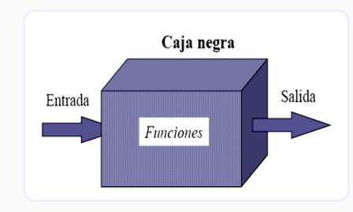
Figura 1: representación gráfica de caja negra
2.1 Caja negra: pruebas exhaustivas de entradas
Si se quiere encontrar absolutamente todos los errores del programa usando esta estrategia, entonces la respuesta es probar con una cantidad exhaustiva de entradas. Esto quiere decir no sólo usar todas las entradas válidas, sino todas las entradas posibles.
Caso de prueba 1: Un valor numérico
En el caso de un campo que debería tomar un valor numérico, deberíamos probarlo con todos los posibles valores desde el 0 hasta el número más grande que permita el lenguaje, pero también con todos los valores posibles inválidos, todas las letras, combinaciones de letras y combinaciones de letras y números permitidas por el lenguaje de programación. Notaremos entonces, que para un solo campo esta es una cantidad casi infinita de casos de prueba. Aún más si pensamos que ningún programa en realidad tiene un solo campo, sino que tiene una combinación de entradas posibles.
Caso de prueba 2: Compilador de C++
Si el caso de prueba 1 suena difícil, imagina la prueba exhaustiva de programas más grandes y complejos.
Considerando un compilador de C, no sólo tendríamos que crear casos de prueba representando todos los programas válidos de C (un número casi infinito), sino que además tendríamos que considerar todos los programas inválidos de C++ (un número definitivamente infinito) para asegurarnos que el compilador detecte que son inválidos. Esto último es para probar que el compilador no haga algo que no debe hacer, compilar un programa sintácticamente incorrecto; tal como vimos en los principios de la semana 1.
El problema se vuelve aún más grande y complicado para el software transaccional que utiliza bases de datos.
Tomemos de ejemplo de un software de reservas de vuelos de una aerolínea, estas transacciones no sólo dependen de las entradas de un caso en particular, sino también de lo que ocurrió anteriormente. Si ya hay asientos reservados en un vuelo, no podemos permitir que se vuelvan a reservar. Es decir que no sólo debemos probar todas las transacciones válidas e inválidas, sino que tenemos que pensar en todas las posibles secuencias de transacciones.
Podríamos seguir listando situaciones cada vez más complejas, pero el punto de la discusión es que la prueba exhaustiva es imposible. Podemos definir entonces 2 implicaciones:
-
No podemos probar un software para garantizar que esté libre de errores (como habíamos visto en la semana 1).
-
Una consideración fundamental a la hora de probar, es la económica.
Por lo tanto, no hay lugar para la prueba exhaustiva.
El objetivo debería ser aumentar el rendimiento del testing maximizando el número de errores encontrado por un número finito de casos de prueba. Una parte de esto implica mirar el código y asumir algunas cosas respecto al software (en el ejemplo del campo que toma un valor numérico del 1 al 10, asumir que el número 1, 2 y 3 tendrán los mismos resultados).
3. Estrategia de caja blanca
Definición: esta estrategia de testing ve el programa como una caja blanca, es decir que examina la estructura interna de un programa. Esta estrategia deriva casos de prueba a partir de la lógica del software, desafortunadamente ignorando la especificación de requerimientos.
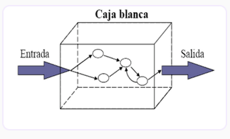
Figura 1: representación gráfica de caja blanca
El objetivo es, entonces, establecer una estrategia análoga a la prueba de entradas que mencionamos en la caja negra.
Queremos causar que cada declaración en el programa se ejecute al menos una vez, pero no es difícil mostrar que esto será extremadamente complejo e inadecuado.
Se suele considerar que si ejecutamos todos los posibles flujos de control del software, entonces ese software se ha probado por completo.
3.1 Falla 1: Caminos lógicos grandes
Una de las fallas en la forma de pensar la estrategia de caja blanca es que el número de caminos lógicos de un programa puede ser astronómicamente grande.
Para ilustrar esto, consideremos la figura 1 que se muestra debajo:
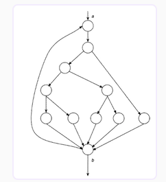
Figura: Diagrama de control de caminos de un programa pequeño
Esta sería una representación de un programa trivial, es un diagrama de control de flujo del programa.
-
Cada nodo o círculo representa una declaración que se ejecuta de forma secuencial, posiblemente modificándose aún más.
-
Cada arco representa la transferencia de control entre las declaraciones. El diagrama representa entonces entre 10 a 20 declaraciones de tipo FOR o WHILE que puede iterar hasta 20 veces.
-
Dentro de cada declaración de tipo loop puede haber declaraciones de tipo IF.
-
Determinar el número único de caminos, entonces, es equivalente a determinar la cantidad de formas únicas de moverse del punto a al punto b (asumiendo que las decisiones del software son independientes entre sí). Este número puede ser de más de 100 trillones de caminos.
Con números tan altos no es difícil visualizar estos números, así que lo pongamos en una forma más concreta. Si pudiéramos escribir, ejecutar y verificar cada caso de prueba en 5 minutos, nos tomaría aproximadamente 100.000 millones de años probar cada camino. Si pudiéramos escribir, ejecutar y verificar cada caso de prueba en 1 segundo, nos tomaría 3.2 millones de años.
Por supuesto, las decisiones en un software real no son independientes entre sí. Es decir que el número posible de caminos ejecutables sería bastante menor.
Por otro lado, los programas reales suelen ser bastante más complejos que el programa que se muestra en la figura 1. Es decir, la prueba exhaustiva de caminos, al igual que la prueba exhaustiva de entradas, parece cada vez más impráctica, si no imposible.
3.2. Falla 2: pruebo todos los caminos, entonces la prueba está completa.
La segunda falla con la forma de pensar “si pruebo todos los caminos internos del software entonces la prueba esta completa” es que cada camino de ejecución del software puede probarse, pero el software aun así puede contener defectos.
Existen 3 motivos para esto:
-
Una prueba exhaustiva de caminos no garantiza que el programa cumpla con su especificación.
Consideremos como ejemplo una rutina que ordene legajos de estudiantes por año de ingreso de los más nuevos a los más viejos. Si por error programamos una rutina que los ordene de forma inversa, la prueba exhaustiva de caminos nos aportará poco valor al error a encontrar. Podemos ordenar de forma perfecta a todos los estudiantes, pero ese software tiene un error fundamental: No es el software que se necesita. No cumple con sus especificaciones. La prueba de caminos no encontrará jamás este gran problema.
-
Un programa puede estar erróneo porque falta programar algunos caminos. La prueba exhaustiva de caminos no descubrirá este problema.
Si consideramos el software académico que discutíamos en el punto 1, si deberíamos poder buscar un alumno por legajo y eso se hace bien, podría faltar el camino del error. ¿Qué ocurre cuando no se encuentra un alumno? Este camino podría faltar porque el desarrollador no lo consideró, y una prueba exhaustiva de caminos nunca detectaría la falta de este camino en particular.
-
Una prueba de caminos exhaustiva puede no descubrir errores dados por los datos. Hay muchos ejemplos de este tipo de problemas.
Imaginamos un programa que compara que la diferencia entre 2 números sea menor a un valor determinado, un típico ejemplo de monitoreo. Tendríamos un código en Java como el siguiente:
if ((a - b) < c) {
print ("El valor está dentro de los parámetros");
}
En este caso, para una cuestión de monitoreo, el código contiene un error. El valor c debería compararse con el valor absoluto de la diferencia en a y b. Ya que, si b es mayor que a, pero aun dentro del rango, el número sea negativo, pero para el negocio estará correcto. Esto dependerá enteramente de los valores de entrada y no será encontrado necesariamente recorriendo todos los caminos del programa.
Como conclusión, podemos decir que a pesar de que la prueba exhaustiva de entradas es superior a la prueba exhaustiva de caminos, ninguna es suficiente para asegurar el buen funcionamiento del programa. Para obtener un buen software necesitaremos una forma de combinar ambas estrategias: la de caja negra y la blanca.
4. Historias de usuario
¿Qué son las Historias de Usuarios?
Antes de seguir adelante, queremos hacer foco en este concepto clave en la metodología de pruebas de sistemas.
Definición: una Historia de Usuario es una forma de especificación de requerimientos muy utilizada hoy en día. Es una forma corta y con pocos detalles de implementación, está más centrada en el usuario.
Se escribe de esta forma:
Como <ROL> quiero <Funcionalidad> para <Valor de negocio>
Esto nos permite saber qué usuario utilizará esa funcionalidad, qué es lo que quiere hacer el usuario y además nos da un valor de negocio para ayudarnos a priorizar las funcionalidades.
En el capítulo 5, podrás conocer en detalle la plantilla de Historias de usuario. Pero, ahora continuemos con otras características:
Las Historias de Usuario además tienen:
-
los llamados criterios de aceptación, que son criterios que nuestro usuario final utilizará para determinar si aceptará o no una funcionalidad desarrollada.
-
Se pueden agregar notas, lo que permitirá agregar aun más información a la Historia de Usuario que no necesariamente se expresa en los criterios de aceptación.
Ejemplo de Historia de Usuario
Como Responsable de Medicion quiero generar reportes estadisticos de consumo para analizar el uso del servicio de agua por parte de los clientes.
Nota 1: Los reportes estadísticos pueden ejecutarse por periodo, por zona y localidad.
Nota 2: En la salida deben mostrarse m3 consumidos por periodo, zona y localidad.
Nota 3: El periodo no puede ser nulo.
Nota 4: Los campos Localidad y Zona pueden dejarse vacios, se consideraran en el reporte en ese caso TODAS las Zonas o TODAS las Localidades.
Nota 5: El reporte puede descargarse en formato PDF, xls o xlsx.
Podemos ver que tenemos que desarrollar una funcionalidad para generar estadísticas de consumo del agua de nuestros clientes por un período determinado de tiempo. Para poder desarrollar esta funcionalidad necesitaremos hablar con nuestro cliente y pedir más información, pero de eso se tratan las Historias de Usuario.
5. Modelo de plantilla de Historias de Usuario
La frase "Como <ROL> quiero <Funcionalidad> para <Valor de negocio>" es una plantilla utilizada en el contexto de la metodología ágil, particularmente en la metodología Scrum.
Esta plantilla se utiliza para definir y estructurar las historias de usuario, que son una forma de expresar requisitos de software de una manera que sea fácil de entender y priorizar.
La plantilla se completa de la siguiente manera:
-
<ROL>: Aquí se especifica el rol del usuario o persona que necesita una funcionalidad o característica en el software. Puede ser un usuario real, como un cliente o un miembro del equipo, y a menudo se describe de manera específica. Por ejemplo, "Como cliente" o "Como administrador del sistema".
-
<Funcionalidad>: En esta parte, se describe de manera concisa la funcionalidad o característica que el usuario o rol desea. Esto debe ser claro y específico, y debe ser una descripción breve de lo que se necesita.
-
<Valor de negocio>: Aquí se indica por qué el usuario o el rol necesita esa funcionalidad. Se relaciona con el beneficio que se obtendrá al implementar esta característica. Puede ser un valor para el negocio, como aumentar la eficiencia, mejorar la experiencia del usuario o cumplir con un requisito legal.
"Como cliente, quiero poder realizar compras en línea (funcionalidad) para facilitar la adquisición de productos y mejorar la conveniencia (valor de negocio)."
Esta plantilla facilita la comunicación y la priorización de requisitos en proyectos ágiles. Ayuda a las personas involucradas en el desarrollo de software a comprender:
-
quién necesita
-
qué necesita,
-
por qué lo necesita y,
-
cómo puede proporcionar valor al negocio o a los usuarios.
6. Pruebas de usuario
Las historias de usuario cuentan con pruebas de usuario que no deben confundirse con casos de prueba, ya que estos, entre otras características son documentos que describen de manera detallada cómo se probará una funcionalidad o característica específica del software. El propósito principal de los casos de prueba es verificar que una parte específica del software funcione según lo previsto.
Y… entonces ¿Qué son las pruebas de usuario?
Definición: las pruebas de usuario son pruebas rápidas sin especificar del todo que nuestro usuario final o cliente utilizará para determinar si los criterios de aceptación se cumplen, y por tanto se va a aceptar la Historia de Usuario.
Esa lista no es exhaustiva y puede ser bastante corta.
Ampliemos el concepto de pruebas de usuario
-
Son una fase más amplia del proceso de aseguramiento de calidad que se centra en la validación de todo el sistema desde la perspectiva del usuario final.
-
Las pruebas de usuario evalúan si el software satisface las necesidades y expectativas de los usuarios.
-
Pueden incluir casos de prueba, pero también pueden abarcar escenarios más amplios, como pruebas de aceptación del usuario (UAT), pruebas de usabilidad y pruebas de rendimiento.
-
Se centran en la experiencia del usuario final y la satisfacción del cliente.
-
Se centran en la validación desde la perspectiva del usuario final.
-
Se evalúa si el software es fácil de usar, cumple con las expectativas del usuario y satisface las necesidades del negocio.
-
Como las pruebas de aceptación del usuario (UAT), generalmente se realizan en una etapa posterior del proceso de desarrollo, cuando el software está cerca de estar listo para su implementación.
Ejemplo de pruebas de usuario
Empresa potabilizadora de agua
Presentamos, a modo de ejemplo, el caso de una Empresa potabilizadora de agua que requiere desarrollar un producto de software que permita gestionar la prestación del servicio de agua potable en las diferentes localidades. Podrán analizar el caso completo en el documento descargable al final de esta página, pero observemos cómo se vería la tabla con las pruebas de usuario, a partir de la Historia de usuario presentada en páginas anteriores:
Pruebas de Usuario
-
Probar visualizar reporte para un período existente, para una única zona y localidad (pasa)
-
Probar visualizar reporte para un período existente, para todas las zonas y localidades (pasa)
-
Probar visualizar reporte para un período a futuro (falla)
-
Probar visualizar reporte sin loguearse como Responsable de Medición (falla)
-
Probar visualizar reporte para un período sin consumos (pasa)
-
Probar visualizar reporte para una localidad inexistente (falla)
7. Pruebas de caja negra
La estrategia de caja negra será el foco de esta semana. Se recomienda utilizar esta estrategia para probar que el programa funcione bien y de acuerdo a las especificaciones. Con esta estrategia realizaremos verificación del software y, hasta cierto punto, validación.
Es importante destacar que la validación utilizando pruebas de caja negra solo es tan efectiva como bien hechos estén los requerimientos. Es decir, si los requerimientos fueron mal detallados por el analista, la verificación será nula. Pero si los requerimientos fueron validados y son correctos, entonces tendremos un grado alto de validación con este método.
En esta materia veremos 4 métodos de caja negra:
-
Partición en clases de equivalencia
-
Análisis de valores límites
-
Gráficos de causa-efecto
-
Adivinación del error
Los dos primeros métodos se estudiarán en profundidad y serán el foco de la semana.
Los dos últimos serán mencionados y explicados de forma rápida debido a que requieren tiempo de experiencia para ser efectivos o conocimientos que no corresponden con los de un técnico superior en desarrollo de software.
8. Método 1: Clases de equivalencia
Hemos dicho anteriormente que un buen caso de prueba es uno que tiene una alta probabilidad de encontrar un defecto. También hemos establecido que una prueba exhaustiva de entradas es imposible. Es decir, que estamos limitados a un pequeño subconjunto de posibles entradas.
Lo que nosotros queremos es seleccionar el subconjunto correcto de entradas para lograr la mayor probabilidad de encontrar errores.
Una forma de encontrar este subconjunto es notar que un caso de prueba bien confeccionado debe tener 2 propiedades:
-
Reducir significativamente la cantidad de casos de prueba necesarios para cumplir el objetivo de una cantidad de pruebas “razonable”.
-
Cubrir un gran conjunto de otros casos de prueba posibles. Es decir, nos dice algo sobre la presencia o ausencia de errores más allá de las entradas específicas que se usan en el mismo.
Si bien estas propiedades pueden parecer similares, describen 2 consideraciones muy diferentes:
-
La primera consideración implica que cada caso de prueba debe tener en cuenta tantas entradas diferentes como sea posible para minimizar la cantidad total de casos de prueba.
-
La segunda implica que deberíamos considerar partir el dominio del programa en un número finito de clases de equivalencia, de forma que podamos asumir (aunque nunca estaremos absolutamente seguros) que una prueba de un valor representativo de una clase es equivalente a probar cualquier otro valor de esa misma clase.
Una clase de equivalencia es un conjunto de entradas que se comportan igual, por lo que alcanza con probar una sola.
-
si la prueba de una clase de equivalencia detecta un error, todos los otros casos de prueba en esa clase de equivalencia deberían tener el mismo error.
-
si un caso de prueba no detecta un error para una clase, podríamos esperar que ningún caso de prueba de esa misma clase contenga errores.
Las 2 consideraciones mencionadas anteriormente, se unen para formar un método de prueba de caja negra llamado partición de equivalencias:
-
La segunda consideración se utiliza para confeccionar un conjunto de condiciones interesantes para probar.
-
La primera consideración se utiliza para confeccionar un conjunto mínimo de casos de prueba cubriendo estas condiciones.
En el programa que valida un número del 1 al 10 de la introducción, sería decir “cualquier número entero mayor o igual a 1 y menor o igual a 10”. Al identificar esta clase de equivalencia, lo que queremos decir es que si no se encuentra ningún error con un caso de prueba que está probando un elemento cualquiera de esa condición, por ejemplo el número 2, entonces es poco probable que encontremos un error probando otro elemento del conjunto, como por ejemplo, el número 5.
En otras palabras: Nuestro tiempo de testing valdría más invirtiéndolo probando otras clases de equivalencia.
El diseño de casos de prueba utilizando partición de equivalencias tiene dos pasos:
-
Identificación de las clases de equivalencia.
-
Definición de los casos de prueba.
Es importante notar que, si bien este método es ampliamente superior a probar casos de prueba al azar, aún tiene sus problemas. Uno de los mayores es que no prueba necesariamente los escenarios con mayor rendimiento de errores.
8.1 Paso 1: Identificación de las clases de equivalencia
Las clases de equivalencia se identifican tomando las condiciones de entrada (normalmente una sentencia o comentario en la especificación) y partirlo en 2 o más grupos. Se puede utilizar la tabla que se muestra a continuación para lograr esto.
Es importante notar que hay 2 tipos de clases de equivalencias: clases válidas y clases inválidas.
-
Las clases válidas representan entradas que el programa debería considerar válidas (en el ejemplo del validador, la clase que identificamos “cualquier número entero mayor o igual a 1 y menor o igual a 10”).
-
Las clases inválidas representan aquellas entradas que causan cualquier otro posible estado de la condición, es decir, valores incorrectos o erróneos (en el ejemplo del validador, podríamos tener la clase “números enteros menores a 1”).
En este método hacemos foco en el principio 5 que vimos en la semana 1, que establece que debemos hacer foco también en las condiciones inválidas o inesperadas, las cuales iremos registrando en una tabla como la siguiente:
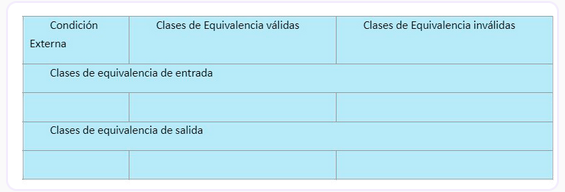
Dada una salida con condición externa, identificar las clases de equivalencia es mayormente un proceso heurístico. Se pueden seguir los siguientes consejos:
-
Si una condición de entrada identifica un rango de valores, se identifica una clase válida y 2 clases inválidas. En el ejemplo del campo validador tenemos la válida mencionada antes y las 2 inválidas “números menores a uno” y “números mayores a 10”.
-
Si una condición de entrada identifica una cantidad de valores a ingresar, entonces identificamos una clase válida y al menos 2 inválidas.
Analicemos con un ejemplo. Si evaluamos un juego multijugador que se juega con 2 a 4 jugadores donde cada jugador tiene su nombre de usuario y un contador de partidas jugadas, una clase válida es “cantidad de jugadores igual o mayor a 2 e igual o menor a 4”. Mientras que las clases inválidas son “menos de 2 jugadores” y “más de 4 jugadores”.
-
Si una condición de entrada especifica una serie de valores y hay alguna razón para creer que el programa los maneja de forma diferente, entonces identificamos una clase válida para cada opción y una clase inválida para cualquier otro valor.
Comprendamos el tercer consejo con el ejemplo.
Si consideramos los envíos de Mercado Libre como un ejemplo, podemos identificar “Envío a domicilio” y “Retiro en sucursal” como una clase válida y “Cualquier otro valor” para una clase inválida. Esto se debe a que cuando seleccionamos “Envío a domicilio” debemos ingresar a qué domicilio enviar y Mercado Libre nos muestra una serie de opciones, pero el “Retiro en sucursal” nos muestra una serie de opciones diferentes. Como la selección solo puede tener uno de esos 2 valores, entonces cualquier otra cosa es una clase inválida.
-
Si una condición de entrada especifica algo obligatorio, entonces debe haber una clase válida para cualquier entrada que cumpla ese criterio y una clase inválida para cualquier entrada que no lo cumpla.
En el ejemplo de una contraseña de usuario, podemos tener una clase válida que sea “cadena de caracteres de entre 8 a 16 caracteres con al menos una letra mayúscula y una letra minúscula” y una clase inválida que sea “cadena de caracteres que no cumple con el formato”.
Si tenemos un motivo para creer que el software no manejará de la misma manera distintos elementos de una clase de equivalencia, entonces debemos partir esa clase de equivalencia en otras clases más pequeñas que abarquen menos información.
8.2 y 8.3 Paso 2 y 3: Definición de los casos de prueba
El segundo paso para el método de 1, es usar las clases de equivalencia para identificar y definir los casos de prueba. El proceso es el siguiente:
-
Asignar un número único a cada clase de equivalencia.
-
Escribir un caso de prueba cubriendo la mayor cantidad de clases de equivalencia válidas aún no cubiertas posibles. Hacer esto hasta cubrir todas las clases de equivalencia válidas.
-
Escribir un caso de prueba cubriendo una clase de equivalencia inválida aún no cubierta, sólo una. Hacer esto hasta cubrir todas las clases de equivalencia inválidas.
El motivo para el tercer paso, es que a veces una entrada errónea puede enmascarar otra entrada inválida, dependiendo de cómo se haya escrito el código.
Cuando escribimos los casos de prueba intentamos que sean “agnósticos” a la tecnología. Es decir, que no debería importarnos con qué tecnología han sido implementados ni de qué forma (si una selección usa un combobox o un autocomplete). Esto lo hacemos para ver qué es lo que esperamos del software a partir de ciertas entradas, no para ver cómo realmente está implementado.
Para la descripción de los casos de prueba debemos especificar:
-
Nombre único: Nos ayudará a identificar un caso de prueba fácilmente. El nombre debe ser representativo del mismo, por ejemplo: compra de artículos exitosa utilizando tarjeta de crédito sin observaciones.
-
Precondiciones: Es el contexto que necesitamos para ejecutar una prueba. Generalmente lo podemos derivar de la especificación de requerimientos. Algunas precondiciones comunes son fecha en la que se ejecuta la prueba, artículos pre-cargados con toda la información necesaria para la ejecución (nombre, precio, modelo, etc.), usuario existente y logueado con permisos específicos, seleccionables a usar cargados, etc.
-
Pasos: Paso por paso a ejecutar durante la prueba. Para programas más “simples” (como veremos en el ejemplo que les compartimos más abajo) podemos tener un solo paso, pero la idea de un caso de prueba es que cualquiera pueda replicarlo en cualquier momento. Si no tenemos un paso a paso con los datos exactos a ingresar, entonces el caso de prueba no puede replicarse. Este paso a paso incluye el orden en el que el tester realiza cada cosa a hacer, así como también la información exacta a usar.
-
Resultados esperados: ¿Qué es lo que espero del sistema? Se deriva de clases de equivalencia de salida. Puede ser el envío de un e-mail, un mensaje en particular, el resultado de un cálculo.
9. Método 2: Análisis de valores límites
La evidencia demuestra que los casos de prueba que se centran en examinar situaciones límite obtienen mejores resultados en comparación con aquellos que no lo hacen.
Definición: Las condiciones límite son aquellas situaciones que están directamente en, justo por encima o justo por debajo de los límites de las clases de equivalencia de entrada o salida.
El análisis de valores límite difiere de la técnica de partición de equivalencias de 2 maneras:
-
En vez de seleccionar cualquier elemento de una clase de equivalencia y tomarlo como representativo, el análisis de valores límite toma los elementos que están directamente al borde de la clase de equivalencia que se está probando.
-
Esta técnica no sólo se concentra en las condiciones de entrada, sino que también se derivan casos de prueba a partir de las condiciones de salida.
Por ejemplo, si tenemos un software que al finalizar el registro envía un e-mail, entonces “E-mail enviado al usuario registrado dando la bienvenida e informando su nombre de usuario y contraseña” será una clase de equivalencia válida de salida. Mientras que, si el usuario ingresa una contraseña no válida, la clase de equivalencia inválida de salida será “Mensaje de error que dice ‘La contraseña debe ser de entre 8 a 16 caracteres y contener al menos una mayúscula y una minúscula’”.
Es muy difícil presentar una “receta” para el análisis de valores límite ya que requiere un grado importante de creatividad y de especialización del problema a probar. Por lo tanto, recordando el principio 10 del proceso de testing, es importante la creatividad y estado mental, más que otra cosa.
Sin embargo, se pueden dar algunos consejos que ayudarán en la técnica que veremos a continuación.
9.1 Consejos para el análisis de valores límites
-
Si una condición de entrada especifica un rango de valores, se debería escribir casos de prueba para los límites del rango. Así como también los valores inválidos que están justo en los límites del rango.
Si tenemos un campo con un dominio válido entre -1.00 y 1.00, entonces deberíamos tener casos de prueba que verifiquen las siguientes situaciones: -1, 1, -1.01 y 1.01.
-
Si una condición de entrada especifica un número de valores, se deberían escribir casos de prueba para la cantidad mínima y máxima de valores, así como también una cantidad justo debajo de la mínima y justo por encima de la máxima.
Por ejemplo, si un software puede importar archivos de Excel de entre 1 a 10000 registros, entonces deberíamos probarlo con un Excel sin registros, con 1 registro, con 10000 registros y con 10001 registros.
-
El consejo 1 también aplica para cada valor de salida posible.
Por ejemplo, si tenemos un software que liquida sueldos y debemos hacer deducciones impositivas, donde el mínimo es $0.0 y el máximo $5000, entonces debemos probar condiciones que resulten en una deducción negativa, una deducción de $0.0, una deducción de $5000 y una deducción mayor a $5000.
Es muy importante probar no sólo los límites de las entradas, sino también los límites de las salidas, ya que puede ocurrir que los límites de entrada no siempre tengan como resultado los límites de la salida.
-
El consejo 2 también aplica para cada condición de salida. Si nuestro software tiene un rango de resultados, entonces debemos probar las condiciones para que se den todos los resultados posibles.
Por ejemplo, si tenemos un software que busca artículos médicos y puede resultar en la muestra de entre 2 a 8 artículos, deberíamos probar ocasionar resultados donde muestre 1 artículo, 2 artículos, 8 artículos y 9 artículos.
-
Si las entradas o salidas de un programa es un conjunto específico y pre-definido, entonces se debe prestar especial atención a los primeros y últimos elementos de las listas. Es importante notar que esto no siempre es posible.
Si tenemos una selección de género entre “Femenino”, “Masculino” y “No binario” entonces no existe un límite que esté primero o último para aplicar la técnica.
-
Si alguna condición de entrada tiene condiciones particulares, como longitud del campo, peso de un archivo o algo similar, entonces realizar casos de prueba para esas condiciones válidas e inválidas.
Por ejemplo, si nuestro software soporta imágenes de hasta 2 Gb, entonces probar con una imagen de 2 Gb y con una imagen de 2.01 Gb.
-
Finalmente, utilizar la creatividad y la inteligencia para encontrar qué otros límites pueden existir.
9.2 Ejemplos del método 2
El ejemplo del campo que valida números del 1 al 10 puede mostrar perfectamente un análisis de valores límites. Para los valores de entrada podemos probar el número 0, el número 1, el número 10 y el número 11. Así tendríamos todos los casos límites cubiertos.
Esta es una técnica extremadamente simple, que es muy fácil de utilizar incorrectamente. Las condiciones límites son muchas veces extremadamente sutiles, por lo que la identificación de las mismas requiere mucha atención y tiempo de pensamiento. Veremos algunas de esas sutilezas en los ejemplos a continuación.
Para la especificación de casos de prueba utilizamos el mismo formato que vimos en la técnica de particiones de equivalencia:
-
Nombre único: Nos ayudará a identificar un caso de prueba fácilmente. El nombre debe ser representativo del mismo. Ejemplo: “compra de artículos exitosa utilizando tarjeta de crédito sin observaciones”.
-
Precondiciones: Es el contexto que necesitamos para ejecutar una prueba. Generalmente lo podemos derivar de la especificación de requerimientos. Algunas precondiciones comunes son fecha en la que se ejecuta la prueba, artículos pre-cargados con toda la información necesaria para la ejecución (nombre, precio, modelo, etc.), usuario existente y logueado con permisos específicos, seleccionables a usar cargados, etc.
-
Pasos: Paso por paso a ejecutar durante la prueba. Para programas más “simples” (como veremos en el ejemplo) podemos tener un solo paso, pero la idea de un caso de prueba es que cualquiera pueda replicarlo en cualquier momento. Si no tenemos un paso a paso con los datos exactos a ingresar, entonces el caso de prueba no puede replicarse. Este paso a paso incluye el orden en el que el tester realiza cada cosa a hacer, así como también la información exacta a usar.
-
Resultados esperados: ¿Qué es lo que espero del sistema? Se deriva de clases de equivalencia de salida. Puede ser el envío de un e-mail, un mensaje en particular, el resultado de un cálculo.
10 Método 3: Grafos de causa-efecto
Este método se describirá de manera breve, ya que no se espera que los técnicos superiores en desarrollo de software tengan todas las herramientas necesarias para ejecutarla. Sin mencionar que es poco usada en el mercado laboral, al año 2022, por la complejidad que conlleva utilizarla. Se introducirá para que los estudiantes conozcan de la misma e investiguen por su cuenta por si desean hacerlo.
Los grafos permiten de una forma sistémica seleccionar qué condiciones utilizaremos para ejecutar los casos de prueba. También ayuda a evidenciar cuándo la especificación está incompleta o escrita de una forma ambigua.
El grafo utiliza lógica de circuitos digitales, por lo que no veremos esta técnica ya que se requiere un conocimiento de lógica y álgebra de Boole, así como también conocimientos de la notación electrónica de circuitos.
Esta técnica se basa en descomponer el problema a probar en partes extremadamente pequeñas para trabajar con los grafos.
Luego se identifican las causas y efectos de los comportamientos en la especificación.
-
Una causa es una entrada al sistema, que puede corresponderse con una condición externa o incluso una clase de equivalencia.
-
Un efecto es una condición de salida o una transformación del sistema.
Las causas y efectos se leen detenidamente y se transforman a lógica de Boole utilizando los grafos, luego se utiliza tablas de verdad para determinar los casos de prueba necesarios para probar el software.
11. Método 4: Adivinación de defectos
A veces ocurre que una persona parece naturalmente dotada para el testing de software. Sin utilizar ninguna metodología en particular, estas personas suelen tener la habilidad de encontrar errores.
Una explicación para esto es que estas personas están utilizando, de manera inconsciente, una técnica de diseño de casos de prueba llamada adivinación de defectos.
Dado un programa en particular, las personas pueden conjeturar ciertos tipos de errores probables y luego diseñar casos de prueba en base a encontrar esos errores. Generalmente estas conjeturas se dan por intuición o, más a menudo, experiencia.
Es difícil dar un procedimiento para la adivinación de defectos, ya que es mayormente intuitiva y un proceso ad-hoc. La idea básica es enumerar todos los posibles errores o situaciones dada a errores, y luego escribir casos de prueba en base a esa lista.
Por ejemplo, la presencia del valor 0 en las entradas de un programa es una situación que se suele prestar para errores. Por lo tanto, escribiríamos casos de prueba donde ciertas entradas en particular reciben el valor 0 y ciertas salidas tienen como resultado el valor 0.
También podemos decir que en los casos donde una entrada o salida presenta una lista (por ejemplo, cantidad de valores en una lista en la cual queremos buscar), una gran cantidad de errores se encuentran cuando la lista está vacía o contiene sólo un elemento. Otra idea es identificar casos de prueba asociados a cosas que los desarrolladores podrían asumir al leer las especificaciones; especialmente relacionados a factores o condiciones omitidas, ya sea por error o porque el escritor de la especificación las consideraba obvias.
Como no es posible dar un procedimiento para este método, podemos plantear algunas preguntas relacionadas al ejemplo del MTEST que no han surgido en la metodología de análisis de valores límites:
-
¿El programa acepta una respuesta en blanco por parte de un estudiante?
-
¿Qué pasa si tenemos un registro de tipo “2” (las preguntas) metido entre todos los registros de tipo “3” (los estudiantes)?
-
¿Qué pasa si 2 estudiantes tienen el mismo legajo?
-
La mediana se calcula diferente según si tenemos una cantidad par o impar de valores, así que se podría probar el programa con ambos casos para ver que el cálculo se haga bien en ambos.
-
¿Qué pasa si el campo “número de preguntas” está vacío?
-
¿Qué pasa si en el campo “tipo” (donde debería ser 2 o 3) aparece otro número?
Semana 3 - Diagramas de flujo
1. Diagramas de flujo
Antes de introducirnos en la estrategia de caja blanca, veamos una herramienta muy útil a la hora de utilizar esta estrategia: el diagrama de flujo.
Un diagrama de flujo es un esquema que describe un proceso, sistema o algoritmo informático. Se usa ampliamente en numerosos campos para documentar, estudiar, planificar, mejorar y comunicar procesos -que suelen ser complejos- mediante diagramas claros y fáciles de comprender.
Los diagramas de flujo emplean rectángulos, óvalos, diamantes y otras numerosas figuras para definir el tipo de paso, junto con flechas conectoras que establecen el flujo y la secuencia. Pueden variar desde diagramas simples y dibujados a mano hasta diagramas exhaustivos creados por computadora que describen múltiples pasos y rutas.
Si tomamos en cuenta todas las diversas figuras, los diagramas de flujo son los más usados por personas con y sin conocimiento técnico en una variedad de campos.
En este primer capítulo, te invitamos a recorrer las principales características de esta herramienta.
1.1 Símbolos de los diagramas de flujo
Símbolo de proceso
También conocido como "símbolo de acción", esta figura representa un proceso, una acción o una función.
Es el símbolo más ampliamente usado en los diagramas de flujo.
Símbolo de inicio y fin
También conocido como "símbolo terminador", este símbolo representa el punto de inicio, el punto de fin y los posibles resultados de un camino.
A menudo contiene las palabras "Inicio" o "Fin" dentro de la figura.
=====Símbolo de documento
Más específicamente, representa la entrada o la salida de un documento. Algunos ejemplos de entradas son recibir un informe, un mensaje de correo electrónico o un pedido.
Algunos ejemplos de salida que usan un símbolo de documento incluyen generar una presentación, un memo o una carta.
Símbolo de decisión
Indican una pregunta que debe responderse —por lo general sí/no o verdadero/falso.
Símbolo de conector
Por lo general, este símbolo se emplea en los diagramas más complejos y conecta elementos separados en una página.
Símbolo de entrada y salida
Esta figura, que también se conoce como "símbolo de datos", representa los datos que están disponibles como entrada o salida, y también representa los recursos empleados o generados.
A pesar de que el símbolo de la cinta de papel también representa la entrada/salida, está obsoleto y ya no se usa en los diagramas de flujo.
Símbolo de nota y comentario
Este símbolo, empleado junto con contexto, agrega una explicación o comentarios necesarios dentro de un rango específico.
También puede conectarse mediante una línea discontinua a la sección correspondiente del diagrama de flujo.
Flecha de flujo
Conecta los pasos del diagrama de flujo e indica la secuencialidad de los mismos.
1.2 Uso de un diagrama de flujo: la empresa potabilizadora de agua
A lo largo de la materia, y especialmente esta semana, utilizaremos el diagrama de flujo para representar de una manera gráfica el código que deberán construir en la práctica formativa. Si recordamos la semana anterior, para algunos ejemplos de testing de caja negra utilizamos el caso de la empresa potabilizadora de agua; retomaremos el mismo ejemplo para poner en práctica el uso de diagramas de flujo.
Podés revisar el documento S2. Historias de usuario: El caso de la Empresa potabilizadora de agua para recordar los requerimientos del dominio y su historia de usuario.
Sabemos que esta Historia de Usuario es una especificación de un requerimiento de código. Se presenta a continuación una parte del pseudocódigo de la misma.
Pseudocódigo
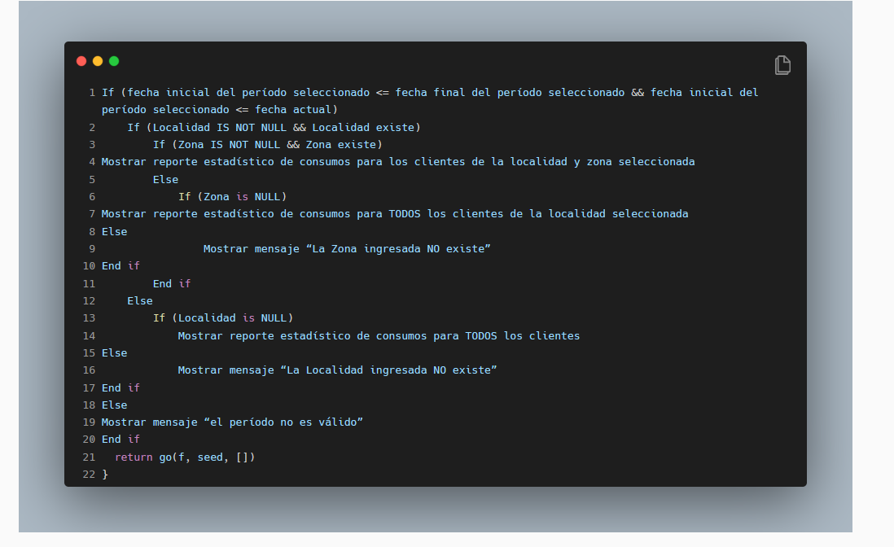
Si quisiéramos armar un diagrama de flujo que representa este pseudocódigo para comprenderlo mejor:
-
comenzaríamos con un símbolo de inicio.
-
Luego del símbolo de inicio nos encontramos con una sentencia IF, es decir con una decisión. Utilizaremos un símbolo de decisión como muestra la imagen a continuación:
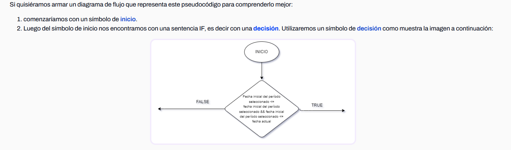
Habiendo graficado la primera decisión, queremos continuar con la siguiente. Para esto:
-
Elegiremos una de las ramas: la verdadera (True) o la falsa (False), y graficaremos la decisión.
-
En este caso comenzaremos con la rama verdadera. En esta rama tenemos otra decisión, y a la rama verdadera de esa decisión le sigue otra.
-
Si graficamos ambas decisiones nos queda un diagrama como el siguiente:
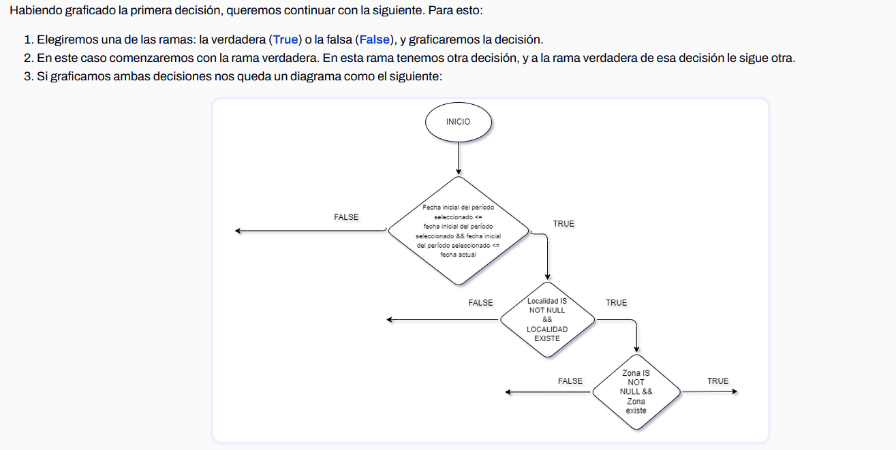
Luego de graficar las dos decisiones, encontramos una sentencia “mostrar”. Esta es una sentencia del código y utilizamos el símbolo de proceso para representarlo. Nos quedaría un diagrama de esta manera:
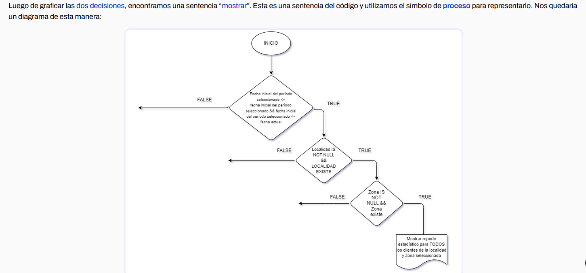
1.3 Diagrama completo
Para graficar el resto del código, simplemente continuamos utilizando los símbolos correspondientes hasta que hemos graficado todas las decisiones y todas las sentencias normales.
Si terminamos de graficar este código, quedaría como muestra la imagen a continuación:
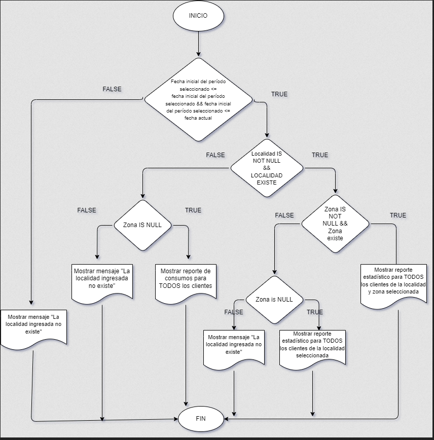
2. Repaso de contenidos previos
Antes de comenzar con los métodos de la estrategia de caja blanca, hagamos un repaso general de lo que vimos hasta el momento.
→ En la semana 1 realizamos una introducción a las estrategias de testing. Recordemos que las estrategias de testing nos sirven para encontrar casos de prueba con el objetivo de economizar tiempo y dinero. Economizar implica utilizar la menor cantidad de casos de prueba posibles para encontrar la mayor cantidad de errores y defectos posibles.
→ Vimos también una introducción a las dos estrategias de testing que existen: la estrategia de caja negra y la estrategia de caja blanca.
→ Aprendimos que en la estrategia de caja negra no debería importarnos el comportamiento interno del software ni su estructura. Esta estrategia de testing solo se concentra en encontrar las circunstancias en las cuales el software no se comporta según su especificación.
Estudiamos 4 métodos de pruebas de caja negra:
-
Método de partición de clases de equivalencias
-
Método de análisis de valores límites
-
Método de grafo de causa – efecto
-
Método de adivinación de defectos
→ En cuanto a la estrategia de caja blanca, vimos una pequeña introducción. Aprendimos que esta estrategia examina la estructura interna de un programa y que deriva casos de prueba a partir de la lógica del software, ignorando la especificación de requerimientos..
El objetivo de la estrategia de caja blanca es causar que cada declaración en el programa se ejecute al menos una vez, sabiendo que esto será extremadamente complejo e inadecuado. El número de caminos lógicos de un programa puede ser astronómicamente grande, lo que se demostró en la semana 2.
Debemos recordar también que el probar todos los caminos internos del software no necesariamente implica que la prueba está completa y que el software funciona correctamente y cómo debe funcionar.
Recordamos los motivos para esto:
-
Una prueba exhaustiva de caminos no garantiza que el programa cumpla con su especificación. Si un software no cumple con sus especificaciones, la prueba de caminos no encontrará jamás este gran problema.
-
Un programa puede estar erróneo porque faltan programar algunos caminos.
-
La prueba exhaustiva de caminos no descubriría este problema.
-
Un camino podría faltar porque el desarrollador no lo consideró, y una prueba exhaustiva de caminos nunca detectaría la falta de este camino en particular.
-
Una prueba de caminos exhaustiva puede no descubrir errores dados por los datos.
En las siguientes páginas, te invitamos a profundizar en los métodos de la estrategia de caja blanca.
3. Métodos de caja blanca
La estrategia de caja blanca será el foco de esta semana. Esta estrategia pretende:
-
Investigar sobre la estructura interna del código, exceptuando detalles referidos a datos de entrada o salida, para probar la lógica del programa desde el punto de vista algorítmico.
-
Realizar un seguimiento del código fuente según se van ejecutando los casos de prueba, determinándose de manera concreta las instrucciones, bloques, etc. que han sido ejecutados por los casos de prueba.
-
Desarrollar casos de prueba que produzcan la ejecución de cada posible ruta o camino del programa o módulo, considerándose una ruta como una combinación específica de condiciones manejadas por un programa.
Hay que señalar que no todos los errores de software se pueden descubrir verificando todas las rutas de un programa, hay errores que se descubren al integrar unidades del sistema y pueden existir errores que no tengan relación con el código específicamente, como vimos en la semana 2.
En esta materia veremos como métodos de caja blanca:
-
cobertura de caminos.
-
cobertura de sentencias.
-
cobertura de decisión.
-
cobertura de condición.
-
cobertura de decisión/condición.
-
cobertura múltiple.
4 Método 1: Cobertura de caminos básicos
Recordemos que la esta estrategia de caja blanca, tiene como objetivo probar la lógica del software y ejecutar todas las líneas de código al menos una vez.
Iniciemos definiendo el primer método de caja blanca.
Definición Cobertura de Caminos Básicos.
Con este método se escriben casos de prueba suficientes para ejecutar todos los caminos de un programa. Entendemos que un camino es una secuencia de sentencias encadenadas desde la entrada de datos hasta la salida del software. Este criterio de cobertura asegura que los casos de prueba diseñados permiten que todas las sentencias del programa sean ejecutadas al menos una vez y que las condiciones sean probadas tanto para su valor verdadero como falso.
Una de las técnicas empleadas para aplicar este criterio de cobertura es la prueba del camino básico. Esta técnica se basa en obtener una medida de la complejidad del diseño procedimental de un programa (o de la lógica del programa). Esta medida es la complejidad ciclomática de McCabe, y representa un límite superior para el número de casos de prueba que se deben realizar para asegurar que se ejecuta cada camino del programa.
Los pasos a realizar para aplicar esta técnica son:
-
Representar el programa en un grafo de flujo (no confundir con un diagrama de flujo).
-
Calcular la complejidad ciclomática.
-
Determinar el conjunto básico de caminos independientes.
-
Derivar los casos de prueba que fuerzan la ejecución de cada camino.
A continuación, se detallan cada uno de los pasos.
4.1 Paso 1: Grafos de flujo
El grafo de flujo se utiliza para representar el flujo de control lógico de un programa. Para ello se utilizan los siguientes elementos:
-
Nodos: representan cero, una o varias sentencias en secuencia. Cada nodo comprende como máximo una sentencia de decisión (bifurcación).
-
Aristas: líneas que unen dos nodos.
-
Regiones: áreas delimitadas por aristas y nodos. Cuando se contabilizan las regiones de un programa debe incluirse el área externa como una región más.
-
Nodo predicado: cuando en una condición aparecen uno o más operadores lógicos (AND, OR, XOR, …) se crea un nodo distinto por cada una de las condiciones simples. Cada nodo generado de esta forma se denomina nodo predicado. La figura a continuación muestra un ejemplo de condición múltiple.
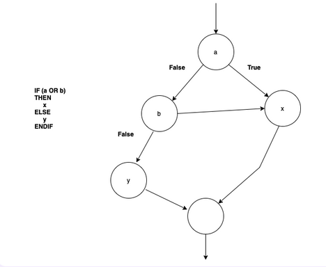
Así, cada construcción lógica de un programa tiene una representación. La siguiente figura muestra dichas representaciones.
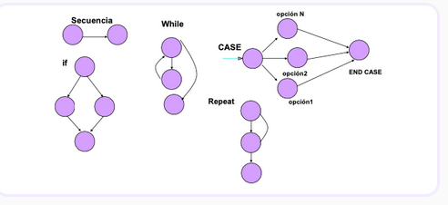
Y la última figura muestra cómo podemos construir un grafo de flujo a partir de un diagrama de flujo. Nótese cómo la estructura principal corresponde a un WHILE, y dentro del bucle se encuentran anidados dos constructores IF.

4.2 Paso 2: complejidad ciclomática
Definición La complejidad ciclomática es una métrica del software que cuantifica la complejidad lógica de un programa. En el contexto del método de prueba del camino básico, la complejidad ciclomática representa el número de rutas independientes dentro del programa, lo que a su vez determina la cantidad de casos de prueba requeridos.
¿Cómo se puede calcular la complejidad ciclomática a partir de un grafo de flujo, para obtener el número de caminos a identificar?
Existen varias formas de calcular esta complejidad:
-
El número de regiones del grafo coincide con la complejidad ciclomática, V(G).
-
La complejidad ciclomática, V(G), de un grafo de flujo G se define como:
V(G) = Aristas – Nodos + 2
-
La complejidad ciclomática, V(G), de un grafo de flujo G se define como:
V(G) = Nodos Predicado + 1
La figura siguiente representa, por ejemplo, las cuatro regiones del grafo de flujo que vimos en la figura del punto anterior, obteniéndose así la complejidad ciclomática de la figura de abajo.
Análogamente se puede calcular el número de aristas y nodos predicados para confirmar la complejidad ciclomática. Así:
V(G) = Número de regiones = 4
V(G) = Aristas – Nodos + 2 = 11 - 9 + 2 = 4
V(G) = Nodos Predicado + 1 = 3 + 1 = 4
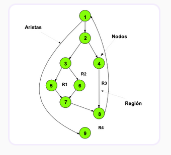
Esta complejidad ciclomática determina el número de casos de prueba que deben ejecutarse para garantizar que todas las sentencias de un programa se han ejecutado al menos una vez, y que cada condición se habrá ejecutado en sus vertientes verdadera y falsa.
4.3 Paso 3: caminos independientes
Definición Un camino independiente es cualquier camino del programa que introduce, por lo menos, un nuevo conjunto de sentencias de proceso o una condición, respecto a los caminos existentes. En términos del grafo de flujo, un camino independiente está constituido por lo menos por una arista que no haya sido recorrida anteriormente a la definición del camino.
En la identificación de los distintos caminos de un programa para probar se debe tener en cuenta que cada nuevo camino debe tener el mínimo número de sentencias nuevas o condiciones nuevas respecto a los que ya existen. De esta manera se intenta que el proceso de depuración sea más sencillo.
El conjunto de caminos independientes de un grafo no es único. No obstante, a continuación, se muestran algunas heurísticas para identificar dichos caminos:
-
Elegir un camino principal que represente una función válida que no sea un tratamiento de error. Debe intentar elegirse el camino que atraviese el máximo número de decisiones en el grafo.
-
Identificar el segundo camino mediante la localización de la primera decisión en el camino de la línea básica alternando su resultado mientras se mantiene el máximo número de decisiones originales del camino inicial.
-
Identificar un tercer camino, colocando la primera decisión en su valor original a la vez que se altera la segunda decisión del camino básico, mientras se intenta mantener el resto de decisiones originales.
-
Continuar el proceso hasta haber conseguido tratar todas las decisiones, intentando mantener en su origen el resto de ellas.
Este método permite obtener V(G) caminos independientes cubriendo el método de cobertura de decisión y sentencia.
Así por ejemplo, para el grafo de la figura 4, presentada anteriormente:
los cuatro posibles caminos independientes generados serían:
Camino 1: 1 - 9 Camino 2: 1-2-4-8-1-9 Camino 3: 1-2-3-5-7-8-1-9 Camino 4: 1-2-3-6-7-8-1-9
Estos cuatro caminos constituyen el camino básico para el grafo de flujo correspondiente.
4.4 Paso 4: casos de prueba
El último paso del método "cobertura de caminos básicos" es construir los casos de prueba que fuerzan la ejecución de cada uno de esos caminos. Ya hemos aprendido a construir casos de prueba la semana 2, pero estos son un poco diferentes.
En la tabla siguiente podemos ver la información necesaria:
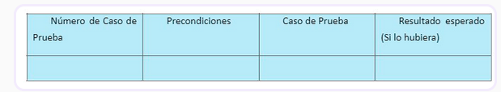
Debido a que estos casos de prueba se centran en el código, no habrá una serie de pasos en el caso de prueba, sino que debemos darle directamente un valor a las variables del mismo.
5. Método 2: Cobertura de sentencias
Con esta técnica, el objetivo es ejecutar todas las sentencias declarativas al menos una vez, de forma tal que cada línea de código se ejecute al menos una vez.
Esto quiere decir que vamos a diseñar casos de prueba de forma tal que fuercen a pasar por todas las sentencias.
Supongamos que tenemos un programa de cálculo de impuestos que debe calcular el impuesto sobre la renta en función del ingreso anual de una persona. El programa contiene las siguientes sentencias:
1. IngresoAnual = 50,000 2. Impuesto = 0 3. Si IngresoAnual > 30,000, entonces 4. Impuesto = (IngresoAnual - 30,000) * 0.15 5. Fin Si 6. Mostrar "El impuesto a pagar es: " + Impuesto
Para aplicar el método de cobertura de sentencias, necesitamos asegurarnos de que cada sentencia se ejecute al menos una vez durante las pruebas. Veamos cómo podríamos lograrlo:
1. Para cubrir la Sentencia 1, podríamos proporcionar un valor de IngresoAnual diferente de 50,000 en nuestras pruebas, como 40,000. 2. Para cubrir la Sentencia 2, debemos asegurarnos de que la variable Impuesto se inicialice en 0 antes de ejecutar las pruebas. 3. Para cubrir la Sentencia 3, necesitamos ejecutar pruebas con valores de IngresoAnual que sean tanto mayores como menores que 30,000 para evaluar ambas ramas del condicional. 4. Para cubrir la Sentencia 4, debemos ejecutar pruebas donde la condición (IngresoAnual > 30,000) sea verdadera. 5. Para cubrir la Sentencia 5, necesitamos ejecutar pruebas que pasen por el bloque de código dentro del "Si". 6. Para cubrir la Sentencia 6, debemos asegurarnos de que la variable Impuesto se muestre en la salida de las pruebas.
En este ejemplo, la cobertura de sentencias garantiza que todas las sentencias del programa se ejecuten al menos una vez durante las pruebas, lo que ayuda a identificar posibles errores en el código y garantiza una mayor confiabilidad del software.
6. Método 3: Cobertura de decisión
Con esta técnica, el objetivo es probar tanto la rama falsa como verdadera de cada decisión que tenemos.
Consideramos una decisión al tipo de sentencia que escribimos dentro de un IF, un ciclo FOR o un ciclo WHILE para controlar el flujo del código. Por lo general, una decisión puede tener un valor booleano, aunque en el caso de un SWITCH puede tener más de dos valores.
Podemos decir que las decisiones pueden ser simples o complejas, las últimas incluyen sentencias OR y/o AND.
Es decir, que con esta técnica vamos a forzar a que todas las decisiones de una porción de código se ejecuten tanto por la rama verdadera como por la rama falsa.
Analicemos el siguiente ejemplo
Si PuntuaciónDeCliente >= 100, entonces
ConcederDescuento = Verdadero
Sino
ConcederDescuento = Falso
Fin Si
Para aplicar la cobertura de decisión, necesitamos asegurarnos de que tanto la condición verdadera como la falsa se prueben. Veamos cómo podríamos hacerlo:
-
Caso de Prueba 1 (Condición Verdadera):
-
Establecemos PuntuaciónDeCliente en un valor igual o mayor a 100.
-
Verificamos que ConcederDescuento sea verdadero.
-
-
Caso de Prueba 2 (Condición Falsa):
-
Establecemos PuntuaciónDeCliente en un valor menor a 100.
-
Verificamos que ConcederDescuento sea falso.
-
En este ejemplo, hemos creado dos casos de prueba para cubrir ambas ramas de la decisión condicional. Esto garantiza que la decisión se haya evaluado en ambas condiciones, lo que es esencial para identificar problemas lógicos en el código y asegurar su correcto funcionamiento.
7. Método 4: Cobertura de condición
Con esta técnica, el objetivo es probar tanto la rama falsa como verdadera de cada condición de una porción de código. A primera vista puede sonar igual a la anterior, pero ese será sólo el caso de tener decisiones simples.
Definición Definimos a una condición como cada una de las expresiones atómicas que conforman una decisión y que pueden anidarse utilizando operadores OR y/o AND. Con esta técnica, lo que queremos hacer es probar cada condición individualmente, sin importar el resultado de la decisión.
Es muy importante destacar que en esta técnica no nos interesa el cortocircuitado de los operadores lógicos.
En la mayoría de los lenguajes de programación, si observamos una decisión como la siguiente:
IF (X > 0 && Y < 15) {
...
}
podemos decir que es una sola decisión con 2 condiciones. Estas condiciones están unidas por un operador AND.
En la mayoría de los lenguajes de programación, si yo pruebo la condición “X > 0” como falsa, entonces la segunda condición no se ejecutará, ya que para que esta decisión sea verdadera necesito que ambas condiciones lo sean.
Esta técnica, a nivel teórico, no contempla este fenómeno (el cortocircuitado de los operadores) ya que es algo que depende enteramente del lenguaje de programación. En la práctica debemos aplicar esta técnica considerando el lenguaje de programación que vayamos a utilizar para respetar el cortocircuitado de los operadores como corresponde.
También es importante destacar que para esta técnica no sólo debemos prestar atención al cortocircuitado, sino a qué tan posible es ejecutar una prueba.
Si tomamos el ejemplo del validador de un número del 1 al 10 que vimos la semana 1,
-
Si necesitamos que el usuario ingrese un número entre el 1 y el 10, entonces deberemos probar una entrada válida y esperada (un número del 1 al 10), pero también deberemos probar las entradas inválidas (un número negativo o un número mayor a 10).
entonces podríamos tener un código como el siguiente:
IF (X > 1 && X < 10) {
...
}
En este ejemplo no podríamos probar con un solo caso de prueba, pero no por el cortocircuitado del operador AND, sino porque es imposible probar las dos ramas falsas a la vez. Como X no puede ser menor a 1 y a la vez mayor a 10, necesitaremos más casos de prueba para ejecutar todas las pruebas.
8. Método 5: Cobertura de decisión / condición
Con esta técnica, el objetivo es que cada condición en una decisión tome todas las posibles salidas, al menos una vez, y cada decisión tome todas las posibles salidas, al menos una vez.
Se puede ver como la combinatoria de las dos técnicas anteriores. Esta técnica tiene las mismas consideraciones que las 2 técnicas anteriores.
Supongamos que estamos probando un programa que decide si una persona es elegible para un descuento en una tienda en línea. El programa contiene la siguiente decisión con múltiples condiciones:
Si PuntuaciónDeCliente >= 100 y MiembroFrecuente = Verdadero, entonces
ConcederDescuento = Verdadero
Sino
ConcederDescuento = Falso
Fin Si
Para aplicar la Cobertura de decisión/condición, necesitamos asegurarnos de que todas las condiciones se evalúen tanto en su estado verdadero como falso. Veamos cómo podríamos hacerlo:
-
Caso de Prueba 1 (Todas las condiciones verdaderas):
-
Establecemos PuntuaciónDeCliente en un valor igual o mayor a 100.
-
Establecemos MiembroFrecuente en Verdadero.
-
Verificamos que ConcederDescuento sea verdadero.
-
-
Caso de Prueba 2 (Todas las condiciones falsas):
-
Establecemos PuntuaciónDeCliente en un valor menor a 100.
-
Establecemos MiembroFrecuente en Falso.
-
Verificamos que ConcederDescuento sea falso.
-
-
Caso de Prueba 3 (Primera condición verdadera, segunda condición falsa):
-
Establecemos PuntuaciónDeCliente en un valor igual o mayor a 100.
-
Establecemos MiembroFrecuente en Falso.
-
Verificamos que ConcederDescuento sea falso.
-
-
Caso de Prueba 4 (Primera condición falsa, segunda condición verdadera):
-
Establecemos PuntuaciónDeCliente en un valor menor a 100.
-
Establecemos MiembroFrecuente en Verdadero.
-
Verificamos que ConcederDescuento sea falso.
-
En este ejemplo, hemos creado cuatro casos de prueba para cubrir todas las combinaciones posibles de condiciones verdaderas y falsas. Esto garantiza que todas las condiciones y combinaciones dentro de la decisión se evalúen exhaustivamente, lo que es esencial para detectar posibles problemas lógicos en el código y asegurar su correcto funcionamiento.
9. Método 6: Cobertura de condición múltiple
Con esta técnica, el objetivo es probar que todas las combinaciones posibles de resultados de cada condición se invoquen al menos una vez.
Para poder utilizar esta técnica, utilizaremos tablas de verdad para ver cómo quedaría la combinatoria de todos los resultados de todas las condiciones de una porción de código.
Si eliminamos las pruebas imposibles, entonces podemos decir que tenemos una cobertura múltiple de las decisiones.
10. Registro y seguimiento de fallas
El seguimiento de errores es el proceso de registrar y monitorear errores o defectos durante las pruebas de software. También se conoce como seguimiento de defectos o seguimiento de problemas. Los sistemas grandes pueden tener cientos o miles de defectos. Cada uno debe ser evaluado, monitoreado y priorizado para la depuración y arreglo. En algunos casos, es posible que sea necesario realizar un seguimiento de los errores durante un período prolongado.
Díce Tutorials Point:
"El seguimiento de defectos es un proceso importante en la ingeniería de software, ya que los sistemas complejos y críticos para el negocio tienen cientos de defectos. Uno de los factores desafiantes es gestionar, evaluar y priorizar estos defectos. El número de defectos se multiplica durante un período de tiempo y, para gestionarlos de forma eficaz, se utiliza un sistema de seguimiento de defectos para facilitar el trabajo".
Los defectos pasarán por varias etapas o estados a lo largo de su vida. Estos estados son los siguientes:
-
Activo: El error o defecto está siendo investigado por los desarrolladores para ver cuál es su causa y así poder arreglarlo.
-
En prueba: Está en etapa de pruebas nuevamente donde se verá si se ha corregido o no.
-
Cerrado: Luego de las nuevas pruebas se puede cerrar el error si es que se ha notado que ya se arregló.
-
Reabierto: Se volvió a encontrar el mismo error, ya sea por un usuario o un desarrollador.
Los errores se gestionan en función de la prioridad y la gravedad. Los niveles de gravedad ayudan a identificar el impacto relativo de un problema en el lanzamiento de un producto. Estas clasificaciones pueden variar en número, pero generalmente incluyen alguna forma de lo siguiente:
-
Bloqueante: Inhibe la continuidad de desarrollo o pruebas del programa.
-
Crítico: Crash de la aplicación, pérdida de datos o fuga de memoria severa.
-
Grave: Pérdida mayor de funcionalidad, como menús inoperantes, datos de salida extremadamente incorrectos, o dificultades que inhiben parcial o totalmente el uso del programa.
-
Normal: Una parte menor del componente no es funcional.
-
Leve: Una pérdida menor de funcionalidad, o un problema que puede ser resuelto de otra manera. Es decir, algo que será un inconveniente para nuestros usuarios, pero podrán seguir utilizando nuestro software.
-
Cosmético: Un problema estético, como puede ser una falta de ortografía o un texto desalineado.
-
Mejora: Solicitud de una nueva característica o funcionalidad.
A la hora de registrar o reportar un error es importante que contenga lo siguiente:
-
Nombre: Un nombre representativo del problema.
-
Caso de prueba que lo encontró: El Caso de Prueba que estábamos usando para encontrarlo, si es que utilizamos un caso de prueba.
-
Pasos para reproducirlo: Un listado ordenado de todos los pasos que se necesitaron para llegar a él. Es importante que si reproducimos esos pasos tenemos que llegar al mismo error, ya que un error que no puede reproducirse no es un error.
-
Gravedad: Alguno de los niveles de gravedad que vimos anteriormente. Necesitamos saber cuál es su gravedad ya que se suele considerar a los errores bloqueantes, críticos y graves como prioritarios para su resolución.
-
Descripción: Se suele agregar una descripción de qué es lo que ocurre, detallando porqué es un error. En esta descripción suele compararse con lo que debería ser, los resultados esperados de cada caso de prueba. Dentro de la descripción también solemos agregar capturas de pantalla del error, para ayudar a los desarrolladores a resolverlo de la mejor manera.
Es importante destacar que el trabajo de los testers es encontrar errores, no resolverlos. Si bien debemos darle un seguimiento a los errores que encontramos para ver que se resuelvan, nosotros no debemos resolverlos ni tampoco es nuestro trabajo sugerir cómo pueden resolverse.
Semana 4
1. Introducción
En las semanas previas, exploramos las estrategias de testing que desempeñan un papel crucial en la identificación de casos de prueba eficientes. La eficiencia se refiere a la capacidad de lograr un equilibrio entre minimizar el número de casos de prueba y maximizar la detección de errores y defectos. Esto significa encontrar la mayor cantidad de problemas posibles con el menor esfuerzo y recursos invertidos.
Por otra parte, realizamos una introducción a las dos estrategias de testing que existen: la estrategia de caja negra y la estrategia de caja blanca; enfatizamos que la estrategia de caja negra no debería importarnos el comportamiento interno del software ni su estructura. En otras palabras, esta estrategia de testing sólo se concentra en encontrar las circunstancias en las cuales el software no se comporta según su especificación.
Estudiamos cuatro métodos de pruebas de caja negra:
-
Método de partición de clases de equivalencias
-
Método de análisis de valores límites
-
Método de grafo de causa – efecto
-
Método de adivinación de defectos
En cuanto a la estrategia de caja blanca, aprendimos que esta estrategia examina la estructura interna de un programa. Y que deriva casos de prueba a partir de la lógica del software, ignorando la especificación de requerimientos.
Estudiamos seis métodos de pruebas de caja blanca:
-
Cobertura de caminos
-
Cobertura de sentencias
-
Cobertura de decisión
-
Cobertura de condición
-
Cobertura de decisión/condición
-
Cobertura múltiple
Finalmente, realizamos una introducción al reporte de errores, recorriendo el ciclo de vida básico de los errores o defectos, el cual puede variar de organización a organización. También revisamos cómo clasificar los errores y defectos según su nivel de gravedad y analizamos qué elementos básicos debe tener un error o defecto para ser reportado.
Ahora ampliaremos ese conocimiento y aprenderemos acerca de una filosofía llamada Bug Advocacy, orientada al reporte y seguimiento de fallas y cómo hacerlas efectivas. === 2. Bug Advocacy
Definición En inglés la palabra advocacy quiere decir abogacía o defensa. Si traducimos de forma literal este concepto, podríamos llamarlo como defensa de errores, aunque este término no es usado, y si se buscara bibliografía del mismo no se encontraría ninguna. Lo importante de esta traducción, sin embargo, es que ya podemos hacernos una idea respecto a qué implica con su nombre.
Alguien que está solo aprendiendo, podría decir que Bug Advocacy es el arte de defender el arreglo de errores de forma persuasiva. Sin embargo, aquellos que ya lo practican hace tiempo dirían que esta habilidad se extiende más allá de sólo hacer campaña para que los errores se arreglen, sino que también se trata de fomentar y defender lo siguiente:
-
Calidad: El profesor Gerald “Jerry” Weinberg define la calidad como el valor para alguien. La filosofía Bug Advocacy involucra hacer énfasis en el valor del software perdido debido a los errores y defectos.
-
Clientes: Las diferentes personas con interés en un software en particular tienen diferentes percepciones de qué es valioso y qué no. Un cliente externo (por ejemplo, un usuario del sistema) no necesariamente percibe como valioso lo que sí es valioso para un cliente interno (por ejemplo, un desarrollador). La filosofía Bug Advocacy implica mirar el software considerando todas las perspectivas.
-
Éxito del producto: El éxito a largo plazo de un producto viene de la aceptación de sus usuarios y de decisiones conscientes. La filosofía de Bug Advocacy nos permitirá mostrar la información de los problemas y errores de forma que los involucrados en el desarrollo de un software puedan tomar esas decisiones de forma consciente y bien informados.
Sabiendo qué es Bug Advocacy, es igual de importante comprender qué no es. Hay varios conceptos que suelen ser confundidos con Bug Advocacy, pero en realidad no lo son:
-
Avergonzar a los/as desarrolladores/as.
-
Defender y promover cualquier tema aleatorio y poco “importante”.
-
Mostrar una imagen errónea del software con historias “interesantes” pero exageradas.
Con Bug Advocacy no queremos entonces promover la resolución de cualquier error o defecto, sino promover la solución de los errores y defectos claves y de más valor, evitando las objeciones que puedan plantear los desarrolladores del producto de software. Utilizando esta filosofía y habilidad, queremos evitar pérdidas de valor a futuro, promover la calidad consciente de nuestro software, prevenir errores de comunicación y construir nuestra credibilidad como testers.
Veamos, a continuación, cómo conseguirlo.
3. ¿Cómo usar Bug Advocacy?
El Doctor Cem Kaner dice que el mejor tester no es el que encuentra la mayor cantidad de defectos ni avergüenza a la mayor cantidad de desarrolladores, sino el que logra que se arreglen la mayor cantidad de defectos.
Si bien esta filosofía y habilidad será útil a lo largo de todo el ciclo de vida del proyecto, hay algunas consideraciones especiales a tener en cuenta según la etapa del desarrollo en la que nos encontramos:
Inicios y mediados del proyecto:
Identificar diferentes errores y defectos en las etapas tempranas del desarrollo nos dará una ventaja cuando aboguemos por los errores. Es muy fácil defender el arreglo de los siguientes tipos de errores en estas etapas tempranas:
-
Problemas de diseño.
-
Problemas de experiencia de usuario (UX) e interfaz de usuario (UI).
-
Problemas de usabilidad.
Etapas tardías y finales del proyecto:
Este es el momento de concentrarnos en los problemas más grandes y los errores críticos. Los problemas mencionados en el apartado anterior no serán priorizados por el equipo de desarrollo debido a la cercanía de las fechas de entrega.
Lo que debemos hacer es convencer a los/as programadores/as que deben utilizar su tiempo resolviendo y arreglando nuestro error (sí, el error, no es sólo del desarrollador que lo introdujo, sino también el comportamiento del tester), en vez de utilizarlo para desarrollar cosas nuevas o arreglar otros errores diferentes. Puede ocurrir que un producto de software tenga miles de errores, y el que nosotros encontramos sea sólo uno de ellos. Debemos hacer notar nuestro error y abogar por su corrección.
Este proceso tiene dos objetivos fundamentales que exploraremos a continuación:
Motivar al comprador : Debemos hacer que el/la desarrollador/a quiera arreglar el error. No debemos pensar que el/la desarrollador/a lo arreglará solo, porque eso es lo que tiene que hacer, sino que lo hará porque quiere hacerlo.
Superar las objeciones: Debemos superar las excusas, motivos y explicaciones que el/la desarrollador/a tendrá para no arreglar el error que le estamos reportando.
4. Motivar para arreglar errores
Cuando reportemos un error o defecto, por lo general los mismos desarrolladores serán la primera línea de defensa en contra de arreglar ese error. Puede sonar contraproducente pensar que un desarrollador no quiere arreglar un error de su código, pero muchas veces ocurre. Esto puede darse por un problema de ego, porque el desarrollador no cree que el error es tan grave, porque ya está con otra cosa y no desea volver a algo viejo. Hay muchos motivos y los desarrolladores siempre tienen su motivo perfecto, es por eso que como testers debemos motivar a quien corresponda para que “compre” la idea de arreglar nuestro error.
Como se mencionó en la introducción de Bug Advocacy el error que encontramos es nuestro. No es un error del desarrollador, ni del analista funcional. Es un error de todos. Es por eso que es nuestra responsabilidad ver que se le de la atención necesaria para ese error o defecto en particular.
Algunos motivos comunes por los que un desarrollador querrá arreglar un error sin la necesidad de ser motivado pueden ser:
-
El problema se ve muy mal ante los ojos de los usuarios y clientes externos.
-
Afecta a muchos usuarios.
-
Encontrar la causa y arreglarlo será relativamente fácil para ellos.
-
Un error similar ha avergonzado a un competidor o a la organización.
-
Alguien con mucho poder e influencia en la organización (un jefe, por ejemplo) ha dicho que se debe arreglar si o si.
-
Como testers, hemos dicho que nos gustaría que el error se arregle y tenemos una excelente relación con el desarrollador así que nos “hará el favor”. Debemos notar que el desarrollador no nos está haciendo ningún favor por arreglar un error que debe ser arreglado, pero así es como ellos lo verán y desde donde nosotros tendremos que partir para lo que sigue.
Cuando ejecutamos pruebas y encontramos fallas, a veces hallamos un síntoma de algo que está mal, pero no el error real. Es decir que siempre debemos hacer seguimiento del error antes de reportarlo para probar que el defecto es una de dos cosas:
-
Más serio de lo que aparenta a primera vista.
-
Más general de lo que aparenta a primera vista.
Volviendo al tema de la motivación de los desarrolladores para arreglar un error, si el error que encontramos es serio o grave, entonces estará más predispuesto a arreglarlo. Lo mismo ocurrirá con los errores más generales: como afectan a más personas, el desarrollador estará más dispuesto a arreglarlo.
5. Error 1: En la programación
Cuando encontramos un error o defecto de programación, quiere decir que hemos encontrado al software en un estado que es distinto a las intenciones del desarrollador y que probablemente no esperaba.
El programa se encuentra entonces en un estado vulnerable. Si continuamos probando alrededor de ese error, probablemente encontremos que el impacto real que la falla subyacente es aún mayor de lo que aparenta. Fallas subyacentes como crashes del sistema o información corrupta.
El Doctor Cem Kaner, experto en ingeniería de software reconocido por su trabajo en el campo de la calidad del software y las pruebas de software, realiza tres tipos de seguimiento:
-
Variar nuestro comportamiento, es decir, cambiar las condiciones en las que se da un error cambiando un poco los pasos del caso de prueba.
-
Variar las opciones y configuraciones del programa, es decir cambiar el entorno del programa cambiando un poco las pre-condiciones del caso de prueba.
-
Variar el entorno de software y hardware. Cambiar de máquina o servidor para probar exactamente lo mismo.
6. Error 2: "En mi máquina no funciona"
Un típico motivo para no arreglar un error que utilizan los desarrolladores es “en mi máquina funciona”. Existen miles de chistes en internet con esta frase.
Los errores que funcionan en la máquina del desarrollador, pero no en el entorno donde estamos probando tienen mucha menos credibilidad que los errores que ocurren en todos lados.
Es importante notar que con credibilidad nos referimos a ser tomados en serio y que los errores reportados sean arreglados. Si los errores que encontramos dependen de la configuración, el reporte será mucho más creíble si identifica la configuración en particular que ocasiona el error.
De esta forma, el desarrollador tendrá la expectativa que el error no aparece en todas las computadoras, y estará abierto a probar las configuraciones para poder depurarlo y arreglarlo.
En un caso ideal las pruebas se realizan en dos máquinas:
-
El flujo principal del proceso de pruebas se realiza en la primera máquina. Esta puede ser la mejor computadora que hay en el mercado o que tenemos disponible. El mejor procesador, las últimas actualizaciones al sistema operativo, una tarjeta gráfica espectacular, un disco con mucho espacio, mucha RAM, internet por cable Ethernet, etc.
-
Al encontrar un error en la primera máquina, intentaremos replicar el error en la segunda máquina. La segunda máquina debería ser todo lo contrario, una “tortuga”. Un procesador diferente y más viejo, un teclado diferente y de baja calidad, sin placa de video, apenas la RAM necesaria para ejecutar el programa, lenta, con poco espacio en disco, etc.
Usando esta técnica podemos hacer dos cosas:
-
Asegurarnos que el error ocurre (o no) en varias configuraciones distintas. Si el error no ocurre en alguna de las 2 máquinas, pero si en la otra, entonces tenemos un error dependiente de la configuración.
-
Asegurarnos que nuestro paso a paso es correcto. Si podemos ejecutar nuestro paso a paso sin problemas en ambas máquinas, quiere decir que la descripción es muy buena.
Replicar los errores en una segunda máquina nos dará muchos beneficios y es una muy buena práctica. Sin embargo, se entiende que no siempre será posible.
7. Identificando errores, ampliando los valores límites
¿Recuerdas que en la semana 2 exploramos el testing de caja negra y el método de los valores límites? Este método se enfoca en las situaciones límite, donde suelen surgir la mayoría de los problemas.
Pero una vez que identificamos un error, ¿debemos preguntarnos si este error también se presenta en condiciones que no son límites?
Por lo tanto, debemos probar valores no límites. Estos son valores “fáciles” que no deberían ser ningún problema para el software.
¿Acaso podemos replicar el error? Si la respuesta es sí, deberíamos reportarlo inmediatamente.
En el reporte debemos referenciar principalmente a:
-
los valores normales
-
los valores no límites.
Esta información hará que nuestro reporte tenga más credibilidad.
Si la respuesta a nuestra pregunta es no, pero los extremos sí, entonces debemos hacer un poco de exploración cerca de los límites.
Este problema, ¿es un problema de valor límite real? ¿O también ocurre con un rango límite?
Debemos reportar todos los incidentes para que el error sea tomado en serio y considerado para ser arreglado.
En resumen
la relación entre valores límites y valores no límites en el proceso de reportar errores juega un papel crucial para mejorar la calidad del software, ya que permite identificar problemas en una variedad de condiciones y garantiza que los errores sean abordados de manera efectiva.
8. Arreglando errores, superando resistencias
Como dijimos anteriormente, hay muchos motivos por los cuales el equipo de desarrollo puede resistirse a arreglar un error. Algunos de esos motivos son:
-
El famoso “en mi máquina funciona”. Si el equipo de desarrollo no puede replicar el error por algún motivo, entonces es muy probable que se resistan a arreglarlo. Los desarrolladores piensan que, en general, si para ellos un error no es un problema, entonces no lo es para nadie. Debemos tener cuidado con este tipo de errores.
-
Los pasos para reproducir el error son “extraños” o “complicados”. En general los equipos de desarrollo desestimarán estos errores porque pensarán que nunca llegarán a afectar al usuario. Su argumento será que es tan complicado de reproducir, que el usuario promedio nunca podría hacerlo.
-
No se tiene la suficiente información para reproducir el error. Si el equipo de desarrollo debe tomarse mucho trabajo para descubrir como replicar el error, entonces probablemente vayan a desestimarlo. Nadie del equipo querrá pasar horas adivinando los pasos para reproducir un error, por lo que no podrán depurar el error por lo que no podrán corregirlo.
-
El equipo de desarrollo no comprende el reporte. Si el reporte es muy complejo de leer, entonces el equipo desestimará los errores que contenga.
-
Esos errores son poco realistas. En general esto ocurre cuando usamos la técnica de valores límite en casos muy específicos. Si los casos de los valores límites son poco probables, entonces el equipo de desarrollo puede decir que ese valor no se dará nunca, por lo tanto, no necesitan arreglar el error.
-
Se necesitará mucho trabajo y tiempo para arreglar ese defecto. Si el equipo de desarrollo cree que arreglar un error será muy trabajoso, y no les parece lo suficientemente importante, entonces se resistirán a arreglarlo.
-
Un arreglo introducirá mucho riesgo en el código. Si el error no es crítico, pero se relaciona con componentes críticos, entonces los desarrolladores pueden decir que es muy arriesgado arreglar el error. Si arreglar un error introducirá muchos errores en una parte crítica del código, el equipo de desarrollo tiene la objeción “perfecta” para no arreglarlo.
-
No se percibe un impacto en los usuarios. Si el equipo de desarrollo no piensa que arreglar un error tendrá beneficios para los usuarios del sistema, entonces se resistirá a arreglarlo.
-
No es importante. Si el error o defecto encontrado es un error de severidad baja o es sobre una funcionalidad no utilizada, entonces el equipo de desarrollo puede argumentar que no es importante y no se arreglará. Esto ocurre mucho con errores de tipo cosmético como errores de ortografía, colores mal usados o textos mal escritos.
-
A la administración no le importa. Si quienes gestionan y manejan el proyecto de desarrollo no tienen un interés en arreglar un error en particular, es posible que el equipo de desarrollo decida no arreglar un error que encontramos porque no hay nadie que los obligue.
-
No le agradamos al equipo de desarrollo. Es muy común en los proyectos de software que el equipo de desarrollo y el tester no tengan una buena relación, ya que el tester busca errores en el trabajo del equipo de desarrollo. Si bien la filosofía Bug Advocacy intenta evitar esto, no todos los testers se suscriben a ella. Cuando el equipo de desarrollo no está feliz con el tester, es común que se rehúsen fuertemente a arreglar los errores reportados por ese tester.
9. Errores no reproducibles
Siempre debemos reportar los errores no reproducibles. No importa si no sabemos como reproducirlo de forma consistente, si lo reportamos el equipo de desarrollo probablemente podrá descubrir cuál es el problema subyacente y así arreglarlo.
Con este apartado intentaremos abarcar la primera y tercera objeción presentadas anteriormente. No podremos eliminarlas por completo, pero podemos mitigar su impacto si sabemos describir las fallas lo más precisamente posibles. Es importante notar que la objeción 1 (“en mi máquina funciona”) también tiene como problema el entorno en el que trabajan los desarrolladores. Si logramos mostrarles como ocurre el error en nuestros dispositivos será más fácil superar esta objeción.
Para ayudar a este proceso, debemos describir la falla lo más precisamente posible. Algunos consejos para lograrlo son:
-
Identificar un mensaje que nos da el software, escribirlo tal cual, ayudará al equipo a encontrar el punto del error. Deberán buscar ese mensaje, si es lo suficientemente raro en el software, podrán buscarlo con facilidad.
-
Escribir todo lo que recordamos de ese error que no podemos reproducir. Se debe hacer en el momento para evitar olvidar aún más cosas. A medida que escribamos todo lo que recordemos debemos preguntarnos si hicimos y ejecutamos los pasos tal cual los estamos escribiendo. Si no estamos seguros, es importante dejar constancia de eso. Se debe diferenciar entre las instrucciones e información que podemos recordar con certeza y la información que no recordamos de forma 100% precisa.
-
Escribir las pruebas que hicimos antes de encontrarnos el error irreproducible. Es posible que este error sea una reacción tardía a algo que probamos anteriormente, por eso queremos que el equipo de desarrollo conozca todas las pruebas que hicimos anteriormente. Si el equipo conoce toda esta información, puede buscar en el código estas reacciones tardías.
-
Revisar el sistema de seguimiento de errores que estemos utilizando para ver si encontramos fallas similares, podríamos encontrarnos un patrón más grande que este error.
Watts Humphrey, un ingeniero de software estadounidense conocido como el “padre de la calidad del software” dice:
-
los errores no reproducibles son errores del tester,
-
los errores de programación son errores de los/as desarrolladores/as.
En resumen
Para mejorar en la búsqueda de errores, es bueno tener un listado de condiciones y variaciones a las que no estamos prestando atención o nos parece muy difícil o complicado de manipular. Si, por ejemplo, queremos probar la velocidad del microprocesador y no sabemos cómo hacerlo, o disminuir la velocidad de Internet y tampoco sabemos cómo hacerlo.
Es por eso que a continuación se listan algunas de las condiciones que son más comúnmente ignoradas por los testers. Cuando nos encontremos con algún error irreproducible debemos mirar esta lista antes de reportarlo y ver si hay alguna condición que no hemos cambiado.
10. Condiciones y variaciones para reportar errores
Antes de reportar un error en un software, los testers deben prestar atención a una serie de condiciones y variaciones que pueden afectar su informe. Es esencial asegurarse de que el error sea genuino y no una consecuencia de factores externos o configuraciones específicas. Además, considerar las diferentes circunstancias en las que se presenta el error es fundamental para proporcionar información precisa al equipo de desarrollo. En la lista siguiente, exploraremos las consideraciones clave que los testers deben tener en cuenta antes de reportar un error, destacando la importancia de la reproducibilidad, la documentación detallada y la identificación de patrones. Estas prácticas ayudarán a garantizar que los errores informados sean válidos y útiles para mejorar la calidad del software.
-
¿Estamos considerando que este error puede ser de algún problema anterior? Una fuga de memoria o corrupción del stack de procesamiento pueden no notarse de forma instantánea, a veces pueden demorar horas. Si sospechamos que este puede ser nuestro problema, lo que debemos hacer es usar herramientas como debuggers, grabaciones o medidores de memoria para revisar que todo funciona correctamente.
-
El error puede depender de una variable oculta. Cuando definimos las clases de equivalencia y los pasos del caso de prueba estamos haciendo foco en la información que nos parece relevante para probar algo en particular y no prestamos atención a lo que consideramos relevante. Si esta información que estamos usando no nos permite replicar el error, entonces es probable que haya otras variables que no estamos viendo que causan en error. Debemos preguntarnos cuáles son esas variables y cómo podemos manipularlas para reproducir el error.
-
Algunas variables están ocultas, pero otras son invisibles. Cuando estudiamos pruebas de caja blanca cambiamos el valor de las variables para obtener los resultados que queríamos, muchas de esas variables pueden ser variables internas, como contadores o banderas que utiliza el programa de manera interna. Estos valores no pueden ser manipulados desde las interfaces así que es más difícil reconocer que existen. Es una buena idea hablar con el/la desarrollador/a de esta porción de código para encontrar estas variables y así poder dar un informe más completo.
-
Algunas condiciones son catalizadoras. Esto quiere decir, que hacen que sea más probable encontrar una falla. Por ejemplo, poca memoria RAM para una perdida de memoria, una máquina lenta para algo que depende del tiempo. Pero también puede ocurrir que estos catalizadores sean más sutiles, como una funcionalidad que tiene una interacción muy pequeña con otra y le ocasiona errores.
-
Algunas fallas ocurren cuando tenemos información corrupta o dañada. No aparecen hasta que no vemos información en la base de datos que es “imposible” ya que el programa nunca debería guardarlas de esa manera. Aquí la raíz del problema es, ¿Qué hemos hecho para que la información esté corrupta? Si bien la falla se produce por la información corrupta, el problema real es lo que hizo que la información esté corrupta en un primer lugar.
-
El error puede aparecer en una hora del día, o día del mes específico. Es importante prestar atención sobre todo al final del día, los fines de semana, finales del mes o cualquier otra fecha o período de tiempo significativo para nuestro programa.
-
El programa tiene muchos grados de acoplamiento de información. Cuando el equipo de desarrollo está trabajando, puede ocurrir que utilicen las mismas funciones o variables para distintos módulos. Si bien en algunos casos esto es una buena práctica, puede traer problemas cuando esa variable se cambia porque el módulo 1 la necesita de una forma, pero no se revisa su uso en el módulo 2. Esto ocasionará fallas en el módulo 2 que parecerán no replicables, pero el problema de base no está para nada relacionado con el módulo 2.
11. Condiciones y variaciones para reportar errores
Continuemos con los ejemplos más comunes de condiciones que a veces pueden ser ignoradas por testers. Esta lista no es para nada exhaustiva y podemos ir ampliándola a medida que vayamos experimentando y probando.
-
El error puede depender de hacer las tareas relacionadas en un orden específico. Por ejemplo, si registramos un producto, registramos un cliente y luego registramos una venta de ese producto a ese cliente, todo sale bien. Pero si primero registramos el cliente y luego el producto tenemos un error. Estos errores no siempre son fáciles de descubrir y se dan más en instancias de pruebas exploratorias que el uso de casos de prueba.
-
Una falla del software puede darse como resultado de un manejo de error. Esto quiere decir que cuando tuvimos un error anterior, el software no puede manejarlo y tiene otra falla. Cuando este sea el caso debemos forzar el primer error para llegar al segundo.
-
Los problemas de Time-out son comunes en sistemas de tiempo real. Estos escenarios no son siempre considerados por los/as desarrolladores/as y son difíciles de replicar cuando no se sabe que esa es la causa.
-
Si el proceso A le envía un mensaje al proceso B y a la vez espera una respuesta, ¿Qué ocurre si B no responde? ¿Qué es lo que debería hacer A? ¿Qué pasa si el proceso B responde mucho después que el tiempo de Time-out haya expirado?
-
Estos son caminos que no siempre son tan fáciles de replicar, pero a la vez son escenarios poco pensados por los desarrolladores. Lo que es peor, en un ambiente de producción estos errores son relativamente comunes. Se dan especialmente en casos de mala internet o una máquina lenta.
-
-
Algunos errores son los llamados “errores de estado inicial”. Estos errores pueden ocurrir solo la primera vez que usamos el programa luego de instalarlo o cuando cargamos el programa y no vuelve a aparecer hasta que no cerramos y volvemos a cargarlo.
-
Son errores difíciles de replicar porque los veremos una vez, pero luego no podremos replicarlos. Si no comprendemos que esta es la causa del error, entonces podemos pasar horas intentando replicarlo sin éxito.
-
Para replicar los errores probablemente tendremos que desinstalar y volver a instalar el programa, a veces incluso necesitaremos una máquina nueva.
-
-
El programa que estamos usando para probar tiene instaladas librerías viejas que no son compatibles con las funcionalidades probadas. Es posible que el/la desarrollador/a tenga la última versión de estas librerías y no se haya actualizado la versión en la máquina donde estamos probando.
-
El error solo aparece en condiciones extremas. No siempre es fácil o simple replicar las condiciones extremas en las que encontramos un error, especialmente si es un error reportado desde producción. No siempre sabemos exactamente cómo replicar la máquina de nuestros usuarios y menos las condiciones extremas de las máquinas de los usuarios.
-
El software es un sistema cooperativo multitareas (como un videojuego online, por ejemplo). La actividad que puede ocurrir de “fondo” por otros usuarios o testers puede afectar nuestras pruebas.
Una muy buena forma de aprender sobre los errores es hablando con el/la desarrollador/a que arregló el error que se había marcado como no reproducible y preguntarle cómo hizo para encontrarlo, para reproducirlo y para tenerlo en cuenta en próximos testeos.
12. Reportes claros y concisos
Los errores deben ser reportados por más que sean difíciles de reproducir. Esos errores que son complicados de reproducir deben tener reportes claros y concisos para evitar las objeciones típicas 3 y 4 (No se tiene la suficiente información para reproducir el error / El equipo de desarrollo no comprende el reporte).
Cuando los pasos para un error son complicados de reproducir, necesitamos un reporte simple de leer con pasos concisos. Si nos hemos olvidado algunos de los detalles de las pruebas que hemos ejecutado, incluyendo detalles críticos o alguna prueba automática que nos permite detectar un error invisible a los ojos, será difícil para el equipo de desarrollo reproducir el error.
Si estamos utilizando herramientas que nos ayudan a encontrar errores es importante incluirlas en el reporte.
Una vez que terminemos de escribir nuestros reportes es una buena práctica mostrarlo a otros testers o otras personas del proyecto para asegurarnos que esas otras personas también pueden reproducir el error.
Analicemos un pequeño reporte con pasos concisos.
Asunto: Error en la función de autenticación
Descripción del Error:
-
Descripción: Al intentar iniciar sesión en la aplicación móvil, se produce un error que impide a los usuarios acceder a sus cuentas.
-
Paso a paso:
-
1. ab
-
2. Ingreso mi nombre de usuario y contraseña.
-
3. Hago clic en "Iniciar sesión".
-
-
Mensaje de Error: Aparece un mensaje que dice "Error de autenticación. Inténtelo de nuevo".
-
Comportamiento Esperado: Debería poder iniciar sesión sin problemas.
-
Fecha y Hora: 15 de octubre de 2023 a las 14:30.
Información Adicional:
Información Adicional:
-
Dispositivo: iPhone X con iOS 15.
-
Versión de la Aplicación: 2.5.0.
-
Conexión a Internet: Wi-Fi estable.
-
Historial de Uso: No había experimentado este problema antes.
-
Capturas de Pantalla: Adjunto capturas de pantalla del mensaje de error.
Este error afecta la experiencia del usuario y debe resolverse lo antes posible. Por favor, avísenme si necesitan más detalles o pruebas adicionales para abordar este problema.
12.1 Partes de un reporte
Un reporte claro y conciso de un tester generalmente consta de las siguientes partes:
-
Descripción del error: Una breve pero precisa descripción del error o problema encontrado en el software.
-
Pasos para reproducirlo: Detalles claros sobre los pasos específicos que se deben seguir para reproducir el error. Esto incluye las acciones realizadas en el software antes de que ocurra el error.
-
Resultado esperado: Una declaración que indica cuál debería ser el resultado correcto o esperado al ejecutar los pasos mencionados.
-
Resultado observado: Lo que sucedió realmente cuando se ejecutaron los pasos. Aquí se proporciona información sobre el error o el comportamiento inesperado.
-
Entorno de prueba: Información sobre el entorno en el que se realizó la prueba, incluyendo detalles sobre la configuración, el sistema operativo, la versión del software y cualquier otra información relevante.
-
Comentarios adicionales: Cualquier información adicional que el tester considere relevante, como posibles causas del error, impacto en el usuario, sugerencias para solucionar el problema, evidencia adicional (capturas de pantalla, registros, etc.).
-
Prioridad y severidad: La importancia y gravedad del error, que puede estar categorizada en niveles como baja, media, alta o crítica.
-
Responsable asignado: Si es aplicable, se puede indicar quién es el encargado de solucionar el error.
-
Fecha y hora del reporte: La fecha y hora en que se reportó el error.
-
Estado del error: Un seguimiento del estado del error, como "Abierto", "En Proceso", "Resuelto" o "Cerrado", a medida que se avanza en su solución.
Un reporte de prueba efectivo y claro debe proporcionar suficiente información para que los/as desarrolladores/as puedan entender y abordar el error de manera eficiente.
12.2 Herramientas para reportar errores
Para reportar errores muchas veces utilizaremos un software de reporte y seguimiento de errores. Estos softwares pueden ser simples como Trello, una herramienta de tableros de trabajo que podemos ver en la imagen debajo de estas líneas, o algo más complejo como Jira, otra herramienta de trabajo de desarrollo de software.
Existen softwares especializados en la gestión y seguimiento de errores, uno de los más conocidos en el 2022 es Bugzilla. Estos softwares nos permiten escribir reportes diferenciados por cada error y dar un seguimiento al estado de dichos errores. Si queremos encontrar alguno simplemente basta con buscar “Bug Tracking Software” y nuestro motor de búsqueda nos proveerá con muchos resultados diferentes y nos permitirá elegir el de nuestra preferencia.
Para esta materia se recomienda utilizar Trello ya que es una herramienta fácil de aprender a usar y puede servir para gestionar proyectos, no sólo errores.
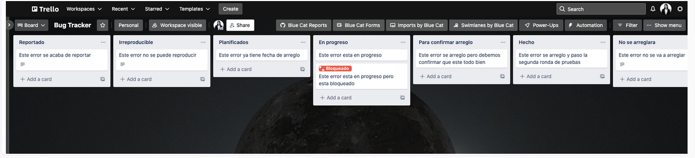
En Trello reportamos los errores en “tarjetas” que acomodamos en “columnas” convenientemente nombradas. La semana anterior vimos que para reportar un error debemos tener lo siguiente:
Nombre: Un nombre representativo del problema.
Caso de prueba que lo encontró: El caso de prueba que estábamos usando para encontrarlo, si es que utilizamos un caso de prueba.
Pasos para reproducirlo: Un listado ordenado de todos los pasos que se necesitaron para llegar a él. Es importante que si reproducimos esos pasos tenemos que llegar al mismo error, ya que un error que no puede reproducirse no es un error.
Gravedad: Alguno de los niveles de gravedad que vimos anteriormente. Necesitamos saber cuál es su gravedad ya que se suele considerar a los errores bloqueantes, críticos y graves como prioritarios para su resolución.
Descripción: Se suele agregar una descripción de qué es lo que ocurre, detallando porque es un error. En esta descripción suele compararse con lo que debería ser, los resultados esperados de cada caso de prueba. Dentro de la descripción también solemos agregar capturas de pantalla del error para ayudar a los desarrolladores a resolverlo de la mejor manera.
En la imagen siguiente podemos ver un error con este formato en Trello. Tenemos todos los items y unas imágenes representativas que ayudan a ilustrar el problema.
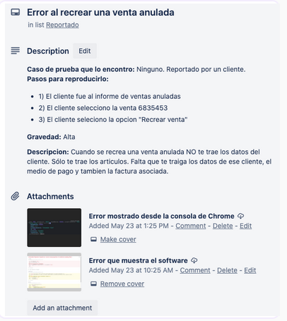
A este reporte de errores le faltan algunas cosas claves que veremos a continuación.
12.3 Escritura en los reportes
Es importante que este reporte se mantenga lo más simple posible manteniendo la mayor cantidad de información posible. Como dijimos anteriormente, necesitamos que este error pueda ser reproducible y eso puede implicar incluir imágenes (capturas de pantalla) o grabaciones de pantalla en los pasos para reproducirlo y/o la descripción.
Errores distintos, reportes distintos
-
Si encontramos 2 errores distintos debemos escribir 2 reportes distintos incluso si los errores parecen estar relacionados entre si. Esto es para mantener los reportes simples y para que el error a arreglar parezca menos intimidante para los desarrolladores. Psicológicamente hablando, no es lo mismo arreglar 2 errores más pequeños que 1 error muy grande.
-
El equipo de desarrollo catalogará 1 reporte como 1 error, así que es nuestro trabajo separar los errores cada uno en sus reportes. Además, si juntamos 2 errores en un solo reporte, es probable que uno de esos errores sea arreglado y el otro no.
-
Es importante referenciar otros errores relacionados en nuestros reportes:
-
agregar un número de error para que cada error tenga un número identificador único y;
-
un apartado con los errores relacionados al nuevo error identificado con un número.
-
En la descripción ser explícitos
Es importante evitar declaraciones en la descripción que digan “no funciona”, “se rompe” o “falla”, ya que no ayudan a replicar el error ni ver porque estamos hablando de un error. Debemos ser explícitos en lo que queremos escribir y el mensaje que queremos que llegue al equipo de desarrollo. Mientras evitamos esas descripciones vagas, también debemos evitar descripciones extremadamente complicadas.
-
Utilizar oraciones simples y concisas, evitando las oraciones subordinadas.
-
Transmitir en las oraciones la información necesaria para replicar el error y encontrar su origen.
-
Eliminar los pasos innecesarios, analizando la secuencia de pasos que estamos describiendo y ver si todos son necesarios
-
Destacar los pasos críticos para hacer reportes más claros.
Por ejemplo, si encontramos un error en la interfaz de venta y, al seguir los pasos originales, notamos que completar un campo obligatorio no afecta el resultado, podemos omitir mencionar ese paso en nuestro reporte. Esto ayudará a simplificar y hacer más claro el reporte para el equipo de desarrollo.
Una vez que identificamos los pasos y condiciones críticas, podemos eliminar el relleno. Sigamos con el ejemplo de la interfaz de un sitio de ventas
Descripción: Error en la interfaz de venta al utilizar el campo de "Con cuánto paga" para calcular el vuelto.
Pasos para reproducir:
-
Seleccionar el producto A.
-
Ingresar que se paga con $500.
Resultado esperado: Se espera que el cálculo del vuelto sea correcto.
Comentarios adicionales: No es necesario describir el proceso de venta completo si el campo de "Con cuánto paga" falla. Con los pasos mencionados, se puede visualizar el error, como un posible mal cálculo del vuelto, sin necesidad de incluir la selección de cliente, tipo de factura u otros medios de pago.
Los pasos para reproducir un error no son necesariamente los mismos que tendremos en el caso de prueba que utilizamos para encontrarlo, pero si podemos simplificar los pasos del caso de prueba, entonces debemos hacerlo.
Si encontramos que el error o defecto también puede escribirse bajo distintas condiciones levemente similares entre sí, debemos incluirlas en el reporte que estamos haciendo. Pero, debemos considerar no podemos simplemente escribir un párrafo complejo mostrando estas otras circunstancias, es por eso que queremos utilizar un apartado extra para comentarios adicionales donde podamos describir información extra que pueden provocar el error o defecto. Es importante agregar las condiciones o caminos alternativos porque dan más información al/la desarrollador/a de cual puede ser el problema para arreglar el error.
Esto quiere decir, que ahora podemos identificar nuevos ítems a agregar en nuestro reporte de errores.
Veamos a continuación qué podemos reportar.
12.4 Otro ejemplo
Recuerda que:
-
el error no se encuentra en una sección de “sugerencia” o “como arreglarlo”.
-
el trabajo de un tester no es el de arreglar un error ni sugerir como arreglarlo.
-
el trabajo de un tester es el de reportar un error llegando a la raíz del problema.
-
el equipo de desarrollo sabe hacer su trabajo, por lo que cuando van a arreglar un error saben cómo hacerlo.
En la imagen siguiente podemos ver un ejemplo del error con el formato en Trello.

Semana 4 - Clase Sincrónica
Bug Advocacy
Cuando un testero un equipo de pruebas encuentra un defecto en el software, el bug advocacy implica comunicar de manera efectiva la importancia y las implicaciones del error a los desarrolladores y otras partes interesadas en el proyecto.
Esto puede implicar proporcionar información detallada sobre cómo reproducir el error, los posibles efectos secundarios que puede tener en el sistema y cualquier otro detalle relevante que ayude a priorizar y resolver el problema de manera eficiente.
El objetivo del bug advocacy es garantizar que los errores críticos se aborden de manera oportuna y efectiva, lo que contribuye a mejorar la calidad y la fiabilidad del software final.
Una comunicación clara y una colaboración efectiva entre los equipos de pruebas y desarrollo son fundamentales para el éxito de esta práctica.
Conceptos importantes de Bug Advocacy
Dentro de la filosofía Bug Advocacy, existen 3 elementos muy importantes:
-
Calidad: El profesor Gerald “Jerry” Weinberg define la calidad como el valor para alguien. La filosofía Bug Advocacy involucra hacer énfasis en el valor del software perdido debido a los errores y defectos.
-
Clientes: Las diferentes personas con interés en un software en particular tienen diferentes percepciones de qué es valioso y qué no. Un cliente externo no necesariamente percibe como valioso lo que sí es valioso para un cliente interno. La filosofía Bug Advocacy implica mirar el software considerando todas las perspectivas.
-
Éxito del producto: El éxito a largo plazo de un producto viene de la aceptación de sus usuarios y de decisiones conscientes. La filosofía de Bug Advocacy nos permitirá mostrar la información de los problemas y errores de forma que los involucrados en el desarrollo de un software puedan tomar esas decisiones de forma consciente y bien informadas.
Bug Advocacy en etapas tempranas
Identificar diferentes errores y defectos en las etapas tempranas del desarrollo nos dará una ventaja cuando aboguemos por los errores.
Es muy fácil defender el arreglo de los siguientes tipos de errores en estas etapas:
-
Problemas de diseño.
-
Problemas de experiencia de usuario (UX) e interfaz de usuario (UI).
-
Problemas de usabilidad.
Bug Advocacy en etapas tardías
Este es el momento de concentrarnos en los problemas más grandes y los errores críticos.
Los problemas mencionados en etapas tempranas no serán priorizados por el equipo de desarrollo debido a la cercanía de las fechas de entrega.
Lo que debemos hacer es convencer a los desarrolladores de que deben utilizar su tiempo resolviendo y arreglando nuestro error (el error es responsabilidad de todo el equipo), en vez de desarrollar nuevas funcionalidades.
Debemos hacer notar nuestro error y abogar por su corrección.
Responsabilidad sobre los errores
El error que encontramos es responsabilidad de todos, no solo del desarrollador.
Es nuestra responsabilidad asegurarnos de que se le dé la atención necesaria.
Cuando ejecutamos pruebas y encontramos fallas, muchas veces encontramos un síntoma y no el error real.
Por eso debemos hacer seguimiento del error antes de reportarlo para validar si es:
-
Más serio de lo que aparenta.
-
Más general de lo que aparenta.
Error 1
Cuando encontramos un error o defecto de programación, significa que el software está en un estado distinto al esperado.
El Dr. Cem Kaner propone tres tipos de seguimiento:
-
Variar el comportamiento (cambiar pasos del caso de prueba).
-
Variar configuraciones del programa (cambiar precondiciones).
-
Variar el entorno (software/hardware).
Error 2: "En mi máquina funciona"
Los errores que no ocurren en la máquina del desarrollador tienen menos credibilidad.
Idealmente, las pruebas deben realizarse en diferentes máquinas.
Esto permite:
-
Verificar si el error depende de la configuración.
-
Validar que los pasos de reproducción sean correctos.
Reportes claros
Los errores deben reportarse siempre, incluso si son difíciles de reproducir.
Los reportes deben ser:
-
Claros
-
Simples
-
Concisos
También es importante:
-
Incluir herramientas utilizadas.
-
Validar el reporte con otros testers.
Ejemplo de error
Reporte sin bug advocacy
"No funciona el botón de guardar."
Reporte con bug advocacy
"Al presionar 'Guardar' en el formulario de clientes (paso 3 del flujo), la aplicación lanza un error 500. Esto impide registrar nuevos clientes y afecta el proceso de ventas. Ocurre en Chrome y Edge."
Ejemplo de error completo
ID: TC-05 Nombre: Ingreso al sistema con credenciales válidas
Pasos:
-
Abrir la aplicación.
-
Ingresar usuario válido.
-
Ingresar contraseña válida.
-
Presionar "Iniciar sesión".
Resultado esperado: El sistema muestra la pantalla principal.
Resultado real: Aparece mensaje "Error inesperado".
Estado: Fallido → ver Bug #101
Ejemplo de reporte de bug
ID: Bug-101
Título: Error inesperado al iniciar sesión con credenciales válidas.
Severidad: Alta (bloquea ingreso de usuarios).
Prioridad: Crítica (impide uso del sistema).
Pasos para reproducir:
-
Abrir la aplicación.
-
Usuario: juan@test.com
-
Contraseña: 123456
-
Clic en "Iniciar sesión".
Resultado real: Aparece mensaje "Error inesperado".
Resultado esperado: Ingreso correcto y carga de pantalla principal.
Unidad 2
Semana 6. Clase sincronica
Pruebas unitarias. Definición
El concepto de pruebas unitarias en el software no es nuevo. Ha estado dando vueltas por la comunidad desde los primeros días de Smalltalk en los 70s. Este método es una de las mejores formas en las que un/a desarrollador/a puede mejorar la calidad del código mientras se gana un entendimiento aún más profundo de los requerimientos funcionales de una clase o método.
Una prueba unitaria es una pieza de código que invoca a una unidad de trabajo y controla un resultado final específico de una unidad de trabajo. Si las asunciones del resultado final resultan estar mal, entonces la prueba falla. El alcance de una prueba unitaria puede ser tan pequeña como un método o tan grande como múltiples clases.
Pruebas unitarias
Es importante destacar que no hay que confundir el acto de probar software con el concepto de prueba unitaria.
Desde la semana 2 hasta la semana 5, las técnicas y métodos que hemos visto hasta el momento no son pruebas unitarias ya que no son pruebas automáticas y no son pruebas a una pequeña parte del software, sino a funcionalidades completas.
Esas pruebas son parte de lo que conocemos como pruebas de integración. Hablaremos sobre pruebas de integración más adelante en la materia, no esta semana. Lo importante es que la mayor diferencia es que las pruebas de integración funcionan sin tener control completo de la unidad de trabajo a probar (ya deja de ser una unidad) y entran en juego dependencias que no dependen al 100% de la prueba (como el tiempo, la red, base de datos, hilos de procesamiento, generadores de números automáticos, llamadas a APIs externas, uso de librerías externas, etc.)